mindmap
root((Regression
Analysis)
Continuous <br/>Outcome Y
{{Unbounded <br/>Outcome Y}}
)Chapter 3: <br/>Ordinary <br/>Least Squares <br/>Regression(
(Normal <br/>Outcome Y)
{{Nonnegative <br/>Outcome Y}}
)Chapter 4: <br/>Gamma Regression(
(Gamma <br/>Outcome Y)
{{Bounded <br/>Outcome Y <br/> between 0 and 1}}
)Chapter 5: Beta <br/>Regression(
(Beta <br/>Outcome Y)
{{Nonnegative <br/>Survival <br/>Time Y}}
)Chapter 6: <br/>Parametric <br/> Survival <br/>Regression(
(Exponential <br/>Outcome Y)
(Weibull <br/>Outcome Y)
(Lognormal <br/>Outcome Y)
)Chapter 7: <br/>Semiparametric <br/>Survival <br/>Regression(
(Cox Proportional <br/>Hazards Model)
(Hazard Function <br/>Outcome Y)
Discrete <br/>Outcome Y
{{Binary <br/>Outcome Y}}
{{Ungrouped <br/>Data}}
)Chapter 8: <br/>Binary Logistic <br/>Regression(
(Bernoulli <br/>Outcome Y)
{{Grouped <br/>Data}}
)Chapter 9: <br/>Binomial Logistic <br/>Regression(
(Binomial <br/>Outcome Y)
{{Count <br/>Outcome Y}}
{{Equidispersed <br/>Data}}
)Chapter 10: <br/>Classical Poisson <br/>Regression(
(Poisson <br/>Outcome Y)
{{Overdispersed <br/>Data}}
)Chapter 11: <br/>Negative Binomial <br/>Regression(
(Negative Binomial <br/>Outcome Y)
{{Zero Inflated <br/>Data}}
)Chapter 12: <br/>Zero Inflated <br/>Poisson <br/>Regression(
(Zero Inflated <br/>Poisson <br/>Outcome Y)
{{Overdispersed or <br/>Underdispersed <br/>Data}}
)Chapter 13: <br/>Generalized <br/>Poisson <br/>Regression(
(Generalized <br/>Poisson <br/>Outcome Y)
{{Categorical <br/>Outcome Y}}
{{Nominal <br/>Outcome Y}}
)Chapter 14: <br/>Multinomial <br/>Logistic <br/>Regression(
(Multinomial <br/>Outcome Y)
14 Multinomial Logistic Regression
When to Use and Not Use Classical Poisson Regression
Multinomial Logistic regression is a type of generalized linear model that is appropriately used under the following conditions:
However, Multinomial Logistic regression should not be used in the following scenarios:
Learning Objectives
By the end of this chapter, you will be able to:
- Describe why ordinary linear models are inappropriate for multi-class nominal outcomes.
- Determine when multinomial logistic regression is an appropriate modeling choice (unordered categorical response with >2 categories; suitable predictors; independent observations).
- Write down the multinomial likelihood and the system of logit link functions relative to a reference category; express class probabilities that sum to one.
- Understand the computation procedure for coefficient estimation via maximum likelihood.
- Interpret multinomial logistic regression coefficients in real scenarios (log-odds vs. baseline, odds ratios, contrasts between non-baseline categories, predicted probabilities).
- Evaluate model performance and construct confidence intervals (confusion matrix, accuracy, log-loss, cross-validation; Wald/LR tests and CIs).
14.1 Introduction
Multinomial logistic regression is a statistical modeling technique used to analyze relationships between a multi-class categorical response variable and a set of explanatory variables. Unlike binary logistic regression, which models outcomes with two categories, multinomial logistic regression extends the framework to outcomes with more than two unordered categories. It estimates the probability of each possible outcome as a function of the predictors by modeling the log-odds of each category relative to a reference category. This method is widely used in fields such as transportation, marketing, and social sciences where the goal is to understand or predict categorical choices among multiple alternatives.
14.1.1 Multinomial Logistic Regression Assumptions
- The response or dependent variable should be measured at the nominal level with more than two values.
- There should be one or more independent variables that are continuous, ordinal or nominal (including dichotomous variables).
- Logit linearity assumption: There needs to be a linear relationship between any continuous independent variables and the logit transformation of the dependent variable.
- Independent observations: The observations should be independent and the dependent variable should have mutually exclusive and exhaustive categories (i.e. no individual belonging to two different categories).
- No Multicollinearity: Multicollinearity occurs when you have two or more independent variables that are highly correlated with each other.
- There should be no outliers, high leverage values or highly influential points.
14.2 Case Study
We will explore a dataset containing information on individuals’ commuting behaviors and demographics, with a focus on their primary mode of transportation. We explore a couple of research problems based on the dataset.
- How is the transportation mode of people (driving own cars or taking public transportation specifically) associated by their commuting distances, given the individuals’ commuting behaviors and demographics including if they have a car, if they commute on weekends, and ages?
- Can we accurately predict the transportation mode of an individual based on their commuting behaviors and demographics including if they have a car, if they commute on weekends, their commute distance, and age?
The two research problems correspond to inferential and predictive statistical objectives respectively:
- To estimate the association between the explanatory variable—commute distance—and the probability of each category of the response—using each transport mode (car v.s. public transportation specifically), given the confounding effects of age, car availability, and weekend commuter status.
- To develop a predictive model that classifies individuals into their most likely transport mode using the predictors commute distance, age, car availability, and weekend commuting status.
14.3 Data Collection and Wrangling
The dataset includes the following five variables:
-
transport_mode(categorical, 4 levels):- The primary mode of transport used by the individual. Categories: “Bicycle”, “Car”, “Public Transit”, “Walking”. This variable is used as the response in data modelling.
-
commute_distance(numeric):- The one-way commuting distance in kilometers.
-
age(numeric):- The age of the individual in years.
-
has_car_available(binary categorical):- Indicates whether the individual has access to a car. Levels: “Yes” or “No”.
-
weekend_commuter(binary categorical):- Indicates whether the individual commutes during weekends. Levels: “Yes” or “No”.
url = "https://raw.githubusercontent.com/andytai7/cookbook/refs/heads/main/raw-data/multinomial_transport.csv"
data = pd.read_csv(url)
data = data.iloc[:, :-1]
print(f"There are {data.shape[0]} observations and {data.shape[1]} variables in the dataset.")
print(data)There are 1000 observations and 5 variables in the dataset.# A tibble: 1,000 × 5
transport_mode commute_distance age has_car_available weekend_commuter
<chr> <dbl> <dbl> <chr> <chr>
1 Public_Transit 22.9 58 No No
2 Public_Transit 23.5 21 Yes Yes
3 Bicycle 7.5 57 Yes No
4 Public_Transit 20.8 43 No No
5 Public_Transit 16.2 41 No No
6 Car 13.2 19 No No
7 Car 18.5 44 Yes No
8 Public_Transit 3.8 52 No No
9 Public_Transit 16.6 29 Yes No
10 Public_Transit 17.8 56 Yes No
# ℹ 990 more rowsurl = "https://raw.githubusercontent.com/andytai7/cookbook/refs/heads/main/raw-data/multinomial_transport.csv"
data = pd.read_csv(url)
data = data.iloc[:, :-1]
print(f"There are {data.shape[0]} observations and {data.shape[1]} variables in the dataset.")There are 1000 observations and 5 variables in the dataset.print(data) transport_mode commute_distance age has_car_available weekend_commuter
0 Public_Transit 22.9 58 No No
1 Public_Transit 23.5 21 Yes Yes
2 Bicycle 7.5 57 Yes No
3 Public_Transit 20.8 43 No No
4 Public_Transit 16.2 41 No No
.. ... ... ... ... ...
995 Public_Transit 3.9 30 No No
996 Car 13.9 22 Yes No
997 Public_Transit 1.9 29 No No
998 Car 12.6 34 Yes No
999 Bicycle 0.7 63 No No
[1000 rows x 5 columns]Factorize the categorical variables. There are four types of transport mode which are by bicycle, car, public transit, and walking.
# Factorize the categorical variables and print their levels
categorical_cols = ['transport_mode', 'has_car_available', 'weekend_commuter']
for col in categorical_cols:
data[col] = data[col].astype('category')
print(f"Levels of {col}: {list(data[col].cat.categories)}")Levels of transport_mode : Bicycle Car Public_Transit Walking
Levels of has_car_available : No Yes
Levels of weekend_commuter : No Yes Levels of transport_mode: ['Bicycle', 'Car', 'Public_Transit', 'Walking']
Levels of has_car_available: ['No', 'Yes']
Levels of weekend_commuter: ['No', 'Yes']Now, we split the dataset into training and test sets, use training set to fit the model, and use test set to assess the model performance.
# Split the data: first 90% for training, last 10% for test
split_idx = int(len(data) * 0.9)
train_set = data.iloc[:split_idx].reset_index(drop=True)
test_set = data.iloc[split_idx:].reset_index(drop=True)
print(f"Training set size: {len(train_set)}")
print(f"Test set size: {len(test_set)}")Training set size: 900Test set size: 100Training set size: 900Test set size: 10014.4 Exploratory Data Analysis
Let’s visualize the response transport_mode and its relationship with the continuous or categorical(binary) explanatory variables (predictors).
# Custom color palette `cbPalette`
cbPalette <- c("#E69F00", "#56B4E9", "#009E73", "#F0E442", "#0072B2", "#D55E00", "#CC79A7")
# Sort `transport_mode` by frequency
train_set$transport_mode <- factor(train_set$transport_mode, levels = names(sort(table(train_set$transport_mode), decreasing = TRUE)))
p1 <- train_set %>%
ggplot(aes(x = transport_mode, fill = has_car_available)) +
geom_bar(position = "stack") + # use "stack" for counts, "fill" for proportions
labs(y = "Count", title = "With Car Availability") +
scale_fill_manual(values=cbPalette) +
theme_bw() +
theme(legend.position = "bottom") +
guides(fill = guide_legend(title = "Car Availability"))
p2 <- train_set %>%
ggplot(aes(x = transport_mode, fill = weekend_commuter)) +
geom_bar(position = "stack") + # use "stack" for counts, "fill" for proportions
labs(x = "Transport Mode", y = "Count", title = "With Weekend Commuter Status") +
scale_fill_manual(values=cbPalette) +
theme_bw() +
theme(legend.position = "bottom") +
guides(fill = guide_legend(title = "Weekend Commuter"))
grid.arrange(p1, p2, ncol = 2, top = grid::textGrob("Distribution of Transport Mode", gp = grid::gpar(fontsize = 16, fontface = "bold")))# Custom color palette `cbPalette`
cbPalette = ["#E69F00", "#56B4E9", "#009E73", "#F0E442", "#0072B2", "#D55E00", "#CC79A7"]
# Sort transport_mode by frequency
order = train_set['transport_mode'].value_counts().index
train_set['transport_mode'] = pd.Categorical(train_set['transport_mode'], categories=order, ordered=True)
# Set up the plot
sns.set_theme(style="whitegrid")
fig = plt.figure()
fig.set_size_inches(8, 6)
gs = GridSpec(1, 2, figure=fig)
_ = fig.suptitle("Distribution of Transport Mode", fontsize=16, fontweight='bold')
# Plot: Stacked bar for Car Availability
car_counts = train_set.groupby(['transport_mode', 'has_car_available']).size().unstack(fill_value=0)
car_counts = car_counts.loc[order]
ax1 = fig.add_subplot(gs[0, 0])
bottom = None
for i, col in enumerate(car_counts.columns):
ax1.bar(car_counts.index, car_counts[col], bottom=bottom, label=col, color=cbPalette[i % len(cbPalette)])
bottom = car_counts[col] if bottom is None else bottom + car_counts[col]
ax1.set_title("With Car Availability")
ax1.set_xlabel("Transport Mode")
ax1.set_ylabel("Count")
ax1.legend(title="Car Availability", loc='upper center', bbox_to_anchor=(0.5, -0.15), ncol=2)
# Plot: Stacked bar for Weekend Commuter
weekend_counts = train_set.groupby(['transport_mode', 'weekend_commuter']).size().unstack(fill_value=0)
weekend_counts = weekend_counts.loc[order]
ax2 = fig.add_subplot(gs[0, 1])
bottom = None
for i, col in enumerate(weekend_counts.columns):
ax2.bar(weekend_counts.index, weekend_counts[col], bottom=bottom, label=col, color=cbPalette[i % len(cbPalette)])
bottom = weekend_counts[col] if bottom is None else bottom + weekend_counts[col]
ax2.set_title("With Weekend Commuter Status")
ax2.set_xlabel("Transport Mode")
ax2.set_ylabel("")
ax2.legend(title="Weekend Commuter", loc='upper center', bbox_to_anchor=(0.5, -0.15), ncol=2)
# Adjust plot layout
plt.tight_layout(rect=[0, 0.05, 1, 1])
plt.show()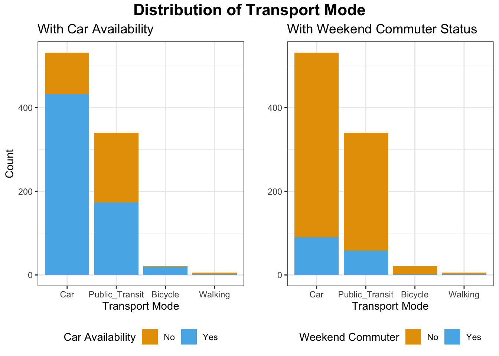
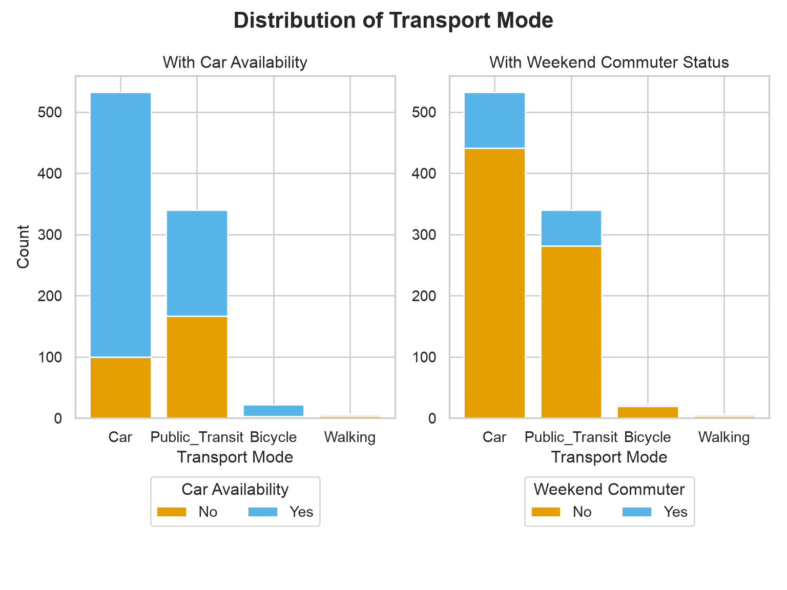
The bar plots displays the distribution of transport mode across car availability and weekend commute status.
Car is the dominant mode of transport, especially among those who have access to a car (blue bar is much taller than orange). Public Transit is used by both those with and without car availability, but is more common among those without a car (orange section is relatively larger). Bicycle and Walking are rare overall but tend to occur more when no car is available.
Most weekend commuters do not significantly change their transport mode: the proportions are largely dominated by the “No” (non-weekend commuter) group (orange). However, Public Transit has a noticeable number of weekend commuters (blue), indicating some weekend reliance on public transit. Walking and Bicycling show little weekend commuting activity.
Visualize the relationship between transport_mode and continuous variables commute_distance and age.
# visualize boxplots and violin plots of commute_distance v.s. transport_mode
p3 <- train_set %>%
ggplot(aes(x = transport_mode, y = commute_distance, fill = transport_mode)) +
geom_violin(alpha = 0.6, trim = FALSE) +
geom_boxplot(alpha = 1, fill = NA) +
labs(x = "Transport Mode", y = "Commute Distance (km)", title =
"Commute Distance by Transport Mode") +
scale_fill_manual(values = cbPalette[3:6]) +
theme_bw() +
theme(legend.position = "none") +
guides(fill = guide_legend(title = "Transport Mode"))
p4 <- train_set %>%
ggplot(aes(x = transport_mode, y = age, fill = transport_mode)) +
geom_violin(alpha = 0.6, trim = FALSE) +
geom_boxplot(alpha = 1, fill = NA) +
labs(x = "Transport Mode", y = "Age", title =
"Age by Transport Mode") +
scale_fill_manual(values = cbPalette[3:6]) +
theme_bw() +
theme(legend.position = "none") +
guides(fill = guide_legend(title = "Transport Mode"))
grid.arrange(p3, p4, ncol = 2, top = grid::textGrob("Box Plots and Violin Plots", gp = grid::gpar(fontsize = 16, fontface = "bold")))sns.set_theme(style="whitegrid")
# Set up side-by-side subplots with shared layout
fig = plt.figure(figsize=(8, 7))
gs = GridSpec(1, 2, figure=fig)
fig.suptitle("Box Plots and Violin Plots", fontsize=16, fontweight='bold')
# Plot Commute Distance vs Transport Mode
ax1 = fig.add_subplot(gs[0, 0])
sns.violinplot(
data=train_set,
x='transport_mode',
y='commute_distance',
palette=cbPalette[2:6],
ax=ax1,
alpha=0.6,
inner=None,
order=order,
cut=3
)
sns.boxplot(
data=train_set,
x='transport_mode',
y='commute_distance',
showcaps=True,
boxprops={'facecolor': 'none', 'edgecolor': 'black'},
whiskerprops={'color': 'black'},
flierprops={'markerfacecolor': 'black', 'markersize': 3},
ax=ax1,
order=order
)
ax1.set_title("Commute Distance by Transport Mode")
ax1.set_xlabel("Transport Mode")
ax1.set_ylabel("Commute Distance (km)")
ax1.get_legend()
# Plot Age vs Transport Mode
ax2 = fig.add_subplot(gs[0, 1])
sns.violinplot(
data=train_set,
x='transport_mode',
y='age',
palette=cbPalette[2:6],
ax=ax2,
alpha=0.6,
inner=None,
order=order,
cut=3
)
sns.boxplot(
data=train_set,
x='transport_mode',
y='age',
showcaps=True,
boxprops={'facecolor': 'none', 'edgecolor': 'black'},
whiskerprops={'color': 'black'},
flierprops={'markerfacecolor': 'black', 'markersize': 3},
ax=ax2,
order=order
)
ax2.set_title("Age by Transport Mode")
ax2.set_xlabel("Transport Mode")
ax2.set_ylabel("Age")
ax2.get_legend()
plt.tight_layout(rect=[0, 0.05, 1, 0.95])
plt.show()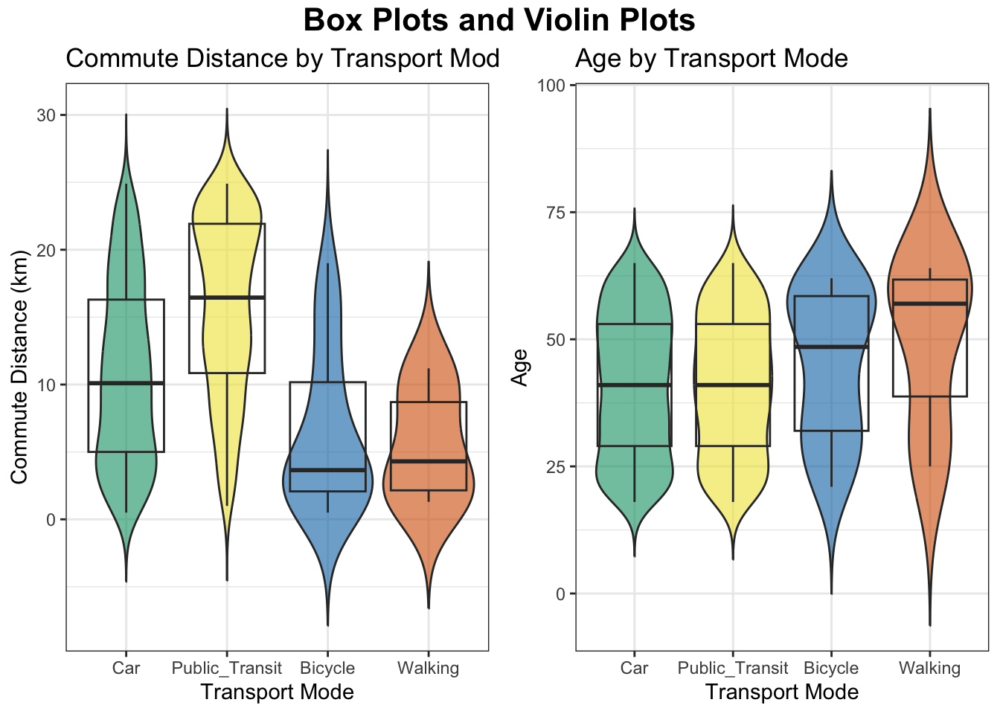
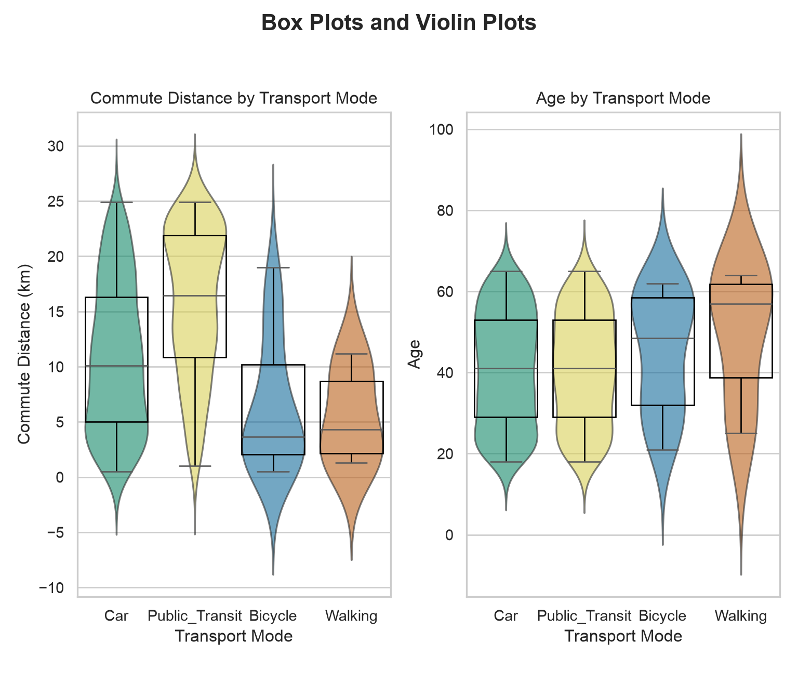
Box and violin plots present that how commute distance and age vary across different transport modes.
Public transit users tend to have the longest commutes on average, with a wide distribution and a median around 17–18 km. Car users also have moderately long commutes, with a median around 10-11 km and a relatively broad spread. Bicycle and Walking are associated with shorter commute distances (medians < 5 km), and their distributions are tightly concentrated near the lower end. All modes show some long-distance commuters (long tails), especially public transit and car.
Car and public transit users have similar age distributions, with median ages in the mid-30s to early 40s. Bicycle users skew slightly younger, but with a long tail of older users. Walking has a much wider spread in age, with a high median (around 60) and some very young walkers as well. The variability in age is greatest for walking, suggesting diverse usage across age groups.
You can also visualize the relationship across other explanatory variables or predictors in various types of figures for practice.
14.5 Data Modelling
A Multinomial Logistic Regression model is a suitable approach to our statistical inquiries given that transport_mode is categorical and nominal (our response of interest) subject to the numerical regressors commute_distance and age and binary regressors has_car_available and weekend_commuter. Moreover, its corresponding regression estimates will allow us to measure variable association.
This regression approach assumes a Multinomial distribution where \(p_{i,1},p_{i,2},\dots,p_{i,m}\) are the probabilities that will belong to categories \(1,2,\dots,m\) respectively; i.e., \[P(Y_i=1)=p_{i,1}, P(Y_i=2)=p_{i,2}, \dots, P(Y_i=m)=p_{i,m}\] where \[ \sum_{j = 1}^m p_{i,j} = p_{i,1} + p_{i,2} + \dots + p_{i,m} = 1. \]
A particular highlight is that the Binomial distriution is a special Multinomial distribution when \(m=2\).
The Multinomial Logistic regression also models the logarithm of the odds. However, only one logarithm of the odds (or logit) will not be enough anymore. Recall we can capture the odds between two categories with a single logit function. What about adding some other ones?
Here is what we can do:
- Pick one of the categories to be the baseline. For example, the category “\(1\)”.
- For each of the other categories, we model the logarithm of the odds to the baseline category.
Now, what is the math for the general case with \(m\) response categories and \(K\) regressors? For the \(i\)th observation, we end up with a system of \(m - 1\) linK functions in the Multinomial Logistic regression model as follows:
\[ \begin{gather*} \label{eq:multinomial-model} \eta_i^{(2,1)} = \log\left[\frac{P(Y_i = 2\mid X_{i,1}, \ldots, X_{i,K})}{P(Y_i = 1 \mid X_{i,1}, \ldots, X_{i,K})}\right] = \beta_0^{(2,1)} + \beta_1^{(2,1)} X_{i, 1} + \beta_2^{(2,1)} X_{i, 2} + \ldots + \beta_K^{(2,1)} X_{i, K} \\ \eta_i^{(3,1)} = \log\left[\frac{P(Y_i = 3\mid X_{i,1}, \ldots, X_{i,K})}{P(Y_i = 1 \mid X_{i,1}, \ldots, X_{i,K})}\right] = \beta_0^{(3,1)} + \beta_1^{(3,1)} X_{i, 1} + \beta_2^{(3,1)} X_{i, 2} + \ldots + \beta_K^{(3,1)} X_{i, K} \\ \vdots \\ \eta_i^{(m,1)} = \log\left[\frac{P(Y_i = m\mid X_{i,1}, \ldots, X_{i,K})}{P(Y_i = 1 \mid X_{i,1}, \ldots, X_{i,K})}\right] = \beta_0^{(m,1)} + \beta_1^{(m,1)} X_{i, 1} + \beta_2^{(m,1)} X_{i, 2} + \ldots + \beta_K^{(m,1)} X_{i, K}. \end{gather*} \]
Note that the superscript \((j, 1)\) in (eq:multinomial-model?) indicates that the equation is on level \(j\) (for \(j = 2, \dots, m\)) with respect to level \(1\). Furthermore, the regression coefficients are different for each link function.
Each of the logit-linear functions in (eq:multinomial-model?) writes the log of odds between each category \(j=2,\dots,m\) and the baseline category \(j=1\) as a linear combination of the regressors. To compare between the categories \(j=2,\dots,m\), we can simply deduct one equation be another, e.g., \[ \begin{gather*} \label{eq:multinomial-deduct} \eta_i^{(2,1)} - \eta_i^{(3,1)} = \log\left[\frac{P(Y_i = 2\mid X_{i,1}, \ldots, X_{i,K})}{P(Y_i = 1 \mid X_{i,1}, \ldots, X_{i,K})}\right] - \log\left[\frac{P(Y_i = 3\mid X_{i,1}, \ldots, X_{i,K})}{P(Y_i = 1 \mid X_{i,1}, \ldots, X_{i,K})}\right] \\ = \log\left[\frac{P(Y_i = 3\mid X_{i,1}, \ldots, X_{i,K})}{P(Y_i = 2 \mid X_{i,1}, \ldots, X_{i,K})}\right] = (\beta_0^{(2,1)}-\beta_0^{(3,1)}) + (\beta_1^{(2,1)}-\beta_1^{(3,1)}) X_{i, 1} + (\beta_2^{(2,1)}-\beta_2^{(3,1)}) X_{i, 2} + \ldots \end{gather*} \]
With some algebraic manipulation, we can show that the probabilities \(p_{i,1}, p_{i,2}, \dots, p_{i,m}\) of \(Y_i\) belonging to categories \(1, 2, \dots, m\) are:
\[ \begin{gather*} \label{eq:prob-multinomial} p_{i,1} = P(Y_i = 1 \mid X_{i,1}, \ldots, X_{i,K}) = \frac{1}{1 + \sum_{j = 2}^m \exp \big( \eta_i^{(j,1)} \big)} \\ p_{i,2} = P(Y_i = 2 \mid X_{i,1}, \ldots, X_{i,K}) = \frac{\exp \big( \eta_i^{(2,1)} \big)}{1 + \sum_{j = 2}^m \exp \big( \eta_i^{(j,1)} \big)} \\ \vdots \\ p_{i,m} = P(Y_i = m \mid X_{i,1}, \ldots, X_{i,K}) = \frac{\exp \big( \eta_i^{(m,1)} \big)}{1 + \sum_{j = 2}^m \exp \big( \eta_i^{(j,1)} \big)}. \end{gather*} \]
Note: The equations above are Softmax functions. The multinomial logistic regression is theoretically equivalent to a one-layer neural network with Softmax activation function, where we input \(X\), output probability \(p_{i,j}\), and minimize the cross-entropy loss function to train the neural network to learn parameters \(\beta\).
If we sum all \(m\) probabilities in (eq:prob-multinomial?), the sum will be equal to \(1\) for the \(i\)th observation. This is particularly important when we want to use this model for making predictions in classification matters.
Goting back to our data example, let us set the Multinomial logistic regression model with transport_mode as the response with four classes: Car, Public_Transit, Bicycle, and Walking (denoted as Car, Public, Bike, Walk respectively) subject to the continuous regressors commute_distance and age, denoted as \(X_{\texttt{distance}}\) and \(X_{\texttt{age}}\) respectively, and binary regressors has_car_available and weekend_commuter, with the dummy variables of class Yes denoted as \(Z_{\texttt{car}}\) and \(Z_{\texttt{weekend}}\) respectively. Use Car class as the baseline model.
\[ \begin{align*} \eta_i^{(\texttt{Public},\texttt{Car})} &= \log\left[\frac{P(Y_i = \texttt{Public} \mid X_{i, \texttt{distance}}, X_{i, \texttt{age}}, Z_{i, \texttt{car}}, Z_{i,\texttt{weekend}})}{P(Y_i = \texttt{Car} \mid X_{i, \texttt{distance}}, X_{i, \texttt{age}}, Z_{i, \texttt{car}}, Z_{i,\texttt{weekend}})}\right] \\ &= \beta_0^{(\texttt{Public},\texttt{Car})} + \beta_1^{(\texttt{Public},\texttt{Car})} X_{i, \texttt{distance}} + \beta_2^{(\texttt{Public},\texttt{Car})} X_{i, \texttt{age}} + \beta_3^{(\texttt{Public},\texttt{Car})} Z_{i, \texttt{car}} + \beta_4^{(\texttt{Public},\texttt{Car})} Z_{i,\texttt{weekend}}, \\ \eta_i^{(\texttt{Bike},\texttt{Car})} &= \log\left[\frac{P(Y_i = \texttt{Bike} \mid X_{i, \texttt{distance}}, X_{i, \texttt{age}}, Z_{i, \texttt{car}}, Z_{i,\texttt{weekend}})}{P(Y_i = \texttt{Car} \mid X_{i, \texttt{distance}}, X_{i, \texttt{age}}, Z_{i, \texttt{car}}, Z_{i,\texttt{weekend}})}\right] \\ &= \beta_0^{(\texttt{Bike},\texttt{Car})} + \beta_1^{(\texttt{Bike},\texttt{Car})} X_{i, \texttt{distance}} + \beta_2^{(\texttt{Bike},\texttt{Car})} X_{i, \texttt{age}} + \beta_3^{(\texttt{Bike},\texttt{Car})} Z_{i, \texttt{car}} + \beta_4^{(\texttt{Bike},\texttt{Car})} Z_{i,\texttt{weekend}}, \\ \eta_i^{(\texttt{Walk},\texttt{Car})} &= \log\left[\frac{P(Y_i = \texttt{Walk} \mid X_{i, \texttt{distance}}, X_{i, \texttt{age}}, Z_{i, \texttt{car}}, Z_{i,\texttt{weekend}})}{P(Y_i = \texttt{Car} \mid X_{i, \texttt{distance}}, X_{i, \texttt{age}}, Z_{i, \texttt{car}}, Z_{i,\texttt{weekend}})}\right] \\ &= \beta_0^{(\texttt{Walk},\texttt{Car})} + \beta_1^{(\texttt{Walk},\texttt{Car})} X_{i, \texttt{distance}} + \beta_2^{(\texttt{Walk},\texttt{Car})} X_{i, \texttt{age}} + \beta_3^{(\texttt{Walk},\texttt{Car})} Z_{i, \texttt{car}} + \beta_4^{(\texttt{Walk},\texttt{Car})} Z_{i,\texttt{weekend}} . \end{align*} \]
In a Multinomial Logistic regression model, each link function has its own intercept and regression coefficients.
Taking exponential on both sides of the model equations gives the ratio of probability of each category Public_Transit, Bicycle, and Walking over the probability of the baseline level Car:
\[ \begin{align*} &\frac{P(Y_i = \texttt{Public} \mid X_{i, \texttt{distance}}, X_{i, \texttt{age}}, Z_{i, \texttt{car}}, Z_{i,\texttt{weekend}})}{P(Y_i = \texttt{Car} \mid X_{i, \texttt{distance}}, X_{i, \texttt{age}}, Z_{i, \texttt{car}}, Z_{i,\texttt{weekend}})} = \exp\left[\eta_i^{(\texttt{Public},\texttt{Car})} \right]\\ &= \exp\left[\beta_0^{(\texttt{Public},\texttt{Car})}\right] \exp\left[\beta_1^{(\texttt{Public},\texttt{Car})} X_{i,\texttt{distance}}\right] \exp\left[\beta_2^{(\texttt{Public},\texttt{Car})} X_{i,\texttt{age}}\right] \exp\left[ \beta_3^{(\texttt{Public},\texttt{Car})} Z_{i, \texttt{car}}\right] \exp\left[ \beta_4^{(\texttt{Public},\texttt{Car})} Z_{i,\texttt{weekend}}\right]\\ &\frac{P(Y_i = \texttt{Bike} \mid X_{i, \texttt{distance}}, X_{i, \texttt{age}}, Z_{i, \texttt{car}}, Z_{i,\texttt{weekend}})}{P(Y_i = \texttt{Car} \mid X_{i, \texttt{distance}}, X_{i, \texttt{age}}, Z_{i, \texttt{car}}, Z_{i,\texttt{weekend}})} = \exp\left[\eta_i^{(\texttt{Bike},\texttt{Car})} \right]\\ &= \exp\left[\beta_0^{(\texttt{Bike},\texttt{Car})}\right] \exp\left[\beta_1^{(\texttt{Bike},\texttt{Car})} X_{i,\texttt{distance}}\right] \exp\left[\beta_2^{(\texttt{Bike},\texttt{Car})} X_{i,\texttt{age}}\right] \exp\left[ \beta_3^{(\texttt{Bike},\texttt{Car})} Z_{i, \texttt{car}}\right] \exp\left[ \beta_4^{(\texttt{Bike},\texttt{Car})} Z_{i,\texttt{weekend}}\right]\\ &\frac{P(Y_i = \texttt{Walk} \mid X_{i, \texttt{distance}}, X_{i, \texttt{age}}, Z_{i, \texttt{car}}, Z_{i,\texttt{weekend}})}{P(Y_i = \texttt{Car} \mid X_{i, \texttt{distance}}, X_{i, \texttt{age}}, Z_{i, \texttt{car}}, Z_{i,\texttt{weekend}})} = \exp\left[\eta_i^{(\texttt{Walk},\texttt{Car})} \right]\\ &= \exp\left[\beta_0^{(\texttt{Walk},\texttt{Car})}\right] \exp\left[\beta_1^{(\texttt{Walk},\texttt{Car})} X_{i,\texttt{distance}}\right] \exp\left[\beta_2^{(\texttt{Walk},\texttt{Car})} X_{i,\texttt{age}}\right] \exp\left[ \beta_3^{(\texttt{Walk},\texttt{Car})} Z_{i, \texttt{car}}\right] \exp\left[ \beta_4^{(\texttt{Walk},\texttt{Car})} Z_{i,\texttt{weekend}}\right] \end{align*} \]
Finally, the probability of \(Y_i\) belonging to categories Car, Public_Transit, Bicycle, and Walking are:
\[ \begin{align*} P(Y_i = \texttt{Car} \mid X_{i, \texttt{distance}}, X_{i, \texttt{age}}, Z_{i, \texttt{car}}, Z_{i,\texttt{weekend}}) &= \frac{1}{1+\exp\left[\eta_i^{(\texttt{Public},\texttt{Car})} \right]+\exp\left[\eta_i^{(\texttt{Bike},\texttt{Car})}\right]+\exp\left[\eta_i^{(\texttt{Walk},\texttt{Car})} \right]} \\ P(Y_i = \texttt{Public} \mid X_{i, \texttt{distance}}, X_{i, \texttt{age}}, Z_{i, \texttt{car}}, Z_{i,\texttt{weekend}}) &= \frac{\exp\left[\eta_i^{(\texttt{Public},\texttt{Car})} \right]}{1+\exp\left[\eta_i^{(\texttt{Public},\texttt{Car})} \right]+\exp\left[\eta_i^{(\texttt{Bike},\texttt{Car})}\right]+\exp\left[\eta_i^{(\texttt{Walk},\texttt{Car})} \right]} \\ P(Y_i = \texttt{Bike} \mid X_{i, \texttt{distance}}, X_{i, \texttt{age}}, Z_{i, \texttt{car}}, Z_{i,\texttt{weekend}}) &= \frac{\exp\left[\eta_i^{(\texttt{Bike},\texttt{Car})}\right]}{1+\exp\left[\eta_i^{(\texttt{Public},\texttt{Car})} \right]+\exp\left[\eta_i^{(\texttt{Bike},\texttt{Car})}\right]+\exp\left[\eta_i^{(\texttt{Walk},\texttt{Car})} \right]}\\ P(Y_i = \texttt{Walk} \mid X_{i, \texttt{distance}}, X_{i, \texttt{age}}, Z_{i, \texttt{car}}, Z_{i,\texttt{weekend}}) &= \frac{\exp\left[\eta_i^{(\texttt{Walk},\texttt{Car})} \right]}{1+\exp\left[\eta_i^{(\texttt{Public},\texttt{Car})} \right]+\exp\left[\eta_i^{(\texttt{Bike},\texttt{Car})}\right]+\exp\left[\eta_i^{(\texttt{Walk},\texttt{Car})} \right]} \end{align*} \]
Note: Changing the baseline category, e.g., switching from Car to Public won’t change the estimated probability for each category for each individual.
14.6 Estimation
We summarise the key estimation steps in math below. We consider one observation at each population \(i\). More estimation details and generalization from one to \(n_i\) observations for population \(i\) can be found in Section 2.2 Parameter Estimation of Czepiel, S. A. (2002)..
Let’s follow the notations in (eq:multinomial-model?) and (eq:prob-multinomial?). Define \(y_{i,j} = 1\) if \(i\)th individual is observed as category \(j\) and \(y_{i,j} = 0\) otherwise. Define the kernel of the log likelihood function for multinomial logistic regression models is \[ \mathcal{L}(\beta \mid y) \simeq \prod_{i=1}^n \prod_{j=1}^m p_{i,j}^{y_{i,j}}. \]
Replacing \(y_{i,1}\) by \(1-\sum_{j=2}^{m} y_{i,j}\) and rearranging the function gives \[ \mathcal{L}(\beta \mid y) \simeq \prod_{i=1}^n \prod_{j=2}^{m} \left(\frac{p_{i,j}}{p_{i,1}} \right)^{y_{i,j}} p_{i,1}. \] Substituting the probabilities by the function of linear combination of regressors as in (eq:prob-multinomial?) and taking the logarithm of the likelihood function yields the log likelihood function, which is the loss function to minimize: \[ \ell(\beta) = \sum_{i=1}^n \sum_{j=2}^m \left(y_{i,j}\sum_{k=0}^K X_{i,k} \beta_k^{(j,1)}\right) - \log\left(1+\sum_{j=2}^m e^{\sum_{k=0}^K X_{i,k}\beta_k^{(j,1)}}\right), \] where \(X_{i,0}=1\) corresponds to the intercept in the linear model. We solve the minimization problem by the Newton-Raphson method as in Section 10.6 in the Poisson Regression Section.
14.6.1 The Newton–Raphson Method
To carry out maximum-likelihood estimation, we iterate Newton–Raphson in a compact matrix form (multinomial iteratively reweighted least squares (IRLS)). Let \(q=(K+1)(m-1)\) be the total number of parameters (an intercept and \(K\) slopes for each of the \(m-1\) non-baseline classes). Then denote
- \(\beta \in \mathbb{R}^q\) (stack of all \(\beta_k^{(j,1)}\)),
- \(S(\beta) \in \mathbb{R}^q\) (stacked Score function components),
- \(H(\beta) \in \mathbb{R}^{q\times q}\) (stacked second derivatives).
For model (category) \(j\) and regressor \(k\), the component of the score function (first-order partial detivative) \(S(\beta)\) is \[ \frac{\partial \ell(\beta)}{\partial \beta_k^{(j,1)}} = \sum_i^n y_{i,j}X_{i,k} - p_{i,j}X_{i,k}. \] For model \(j\) and regressor \(k\) on the row, the component for category \(j'\) and regressor \(k'\) on the column of the Hessian matrix (second-order partial derivative) \(H(\beta)\) is \[ \frac{\partial \ell^2(\beta)}{\partial \beta_k^{(j,1)} \partial \beta_{k'}^{(j',1)}} = \begin{cases} -\sum_{i=1^n} X_{i,k}p_{i,j}(1-p_{i,j})X_{i,k'} & \text{ if } j'=j, \\ \sum_{i=1}^n X_{i,k}p_{i,j}p_{i,j'}X_{i,k'} & \text{ if } j' \neq j, \end{cases} \] where \(j,j'=1,\dots,m\) and \(k,k'=0,\dots,K\).
The Newton-Raphson/IRLS iteration procedure is as follows.
- Choose baseline class; initialize \(\beta^{(0)}=\mathbf{0}\) (stacked over all \((j,k)\)).
- Repeat until convergence:
- Compute the log-odds \(\eta_i^{(j,1)}\), probability \(p_{i,j}\) for all individual \(i\) and category \(j\) across all regressors \(k=1,\dots,K\), and the log-likelihood function \(\ell(\beta^{(t)})\).
- Form the stacked score \(S(\beta^{(t)})\) and Hessian functions \(H(\beta^{(t)})\) using the expressions above.
- Update \(\beta^{(t+1)} \leftarrow \beta^{(t)}+\alpha (H(\beta^{(t)}))^{-1}S(\beta^{(t)})\), with step size \(\alpha\in(0,1]\).
- Check convergence criteria.
14.6.2 Fitting the Model
Now, we fit the multinomial regression model using the nnet package in R or statsmodel package in Python. To handle the imbalanced groups, we resample the training sets to balance out the groups to eliminate the bias in modelling.
# Set the baseline model
train_set$transport_mode <- relevel(train_set$transport_mode, ref = "Car")
# Fit multinomial logistic regression
multinom_fit <- multinom(transport_mode ~ age + commute_distance + has_car_available + weekend_commuter, data = train_set)
# Print the fitted model
print(summary(multinom_fit))# Factorize the response and set the baseline model
train_set["transport_mode"] = pd.Categorical(
train_set["transport_mode"],
categories=["Car", "Bicycle", "Public_Transit", "Walking"],
ordered=False
)
# Design matrix and response
y = train_set["transport_mode"]
X = train_set[["age", "commute_distance", "has_car_available", "weekend_commuter"]]
# Add intercept
X = sm.add_constant(X)
# Convert categorical variables to numeric codes for statsmodels MNLogit
X_numeric = X.copy()
for col in ['has_car_available', 'weekend_commuter']:
X_numeric[col] = X_numeric[col].cat.codes
# Fit multinomial logistic regression
model = sm.MNLogit(y, X_numeric)
multinom_fit = model.fit()
# Print the fitted model
print(multinom_fit.summary())# weights: 24 (15 variable)
initial value 1247.664925
iter 10 value 694.856621
iter 20 value 604.709852
iter 30 value 603.307254
iter 40 value 603.302790
final value 603.302497
convergedCall:
multinom(formula = transport_mode ~ age + commute_distance +
has_car_available + weekend_commuter, data = train_set)
Coefficients:
(Intercept) age commute_distance has_car_availableYes
Public_Transit -0.9516669 -0.0001486655 0.1152912 -1.5582633
Bicycle -3.4108159 0.0237368333 -0.1268209 0.4342351
Walking -4.7447162 0.0626851593 -0.2019441 -2.3925813
weekend_commuterYes
Public_Transit 0.1173869
Bicycle -0.7710694
Walking 1.0924670
Std. Errors:
(Intercept) age commute_distance has_car_availableYes
Public_Transit 0.3027178 0.005650876 0.01190376 0.1692069
Bicycle 0.9621575 0.016624316 0.04314417 0.6361547
Walking 1.7681241 0.035162949 0.10861331 0.9100075
weekend_commuterYes
Public_Transit 0.2073222
Bicycle 0.7566138
Walking 0.9078276
Residual Deviance: 1206.605
AIC: 1236.605 In multinomial logistic regression, we model the probability of each outcome category given predictors. The key assumption is that we have enough data for each category to estimate the model parameters reliably. If one category is much more frequent than the others (i.e., unbalanced outcomes), the model may:
- Bias coefficients toward the majority class because the likelihood function is dominated by majority observations.
- Underestimate uncertainty for rare categories (small sample size → large variance).
- Yield poor predictive performance for minority classes (the model tends to predict the majority class).
- In extreme cases, parameters for rare categories may not converge or may give infinite estimates (complete separation).
The intuition behind is if 95% are “car”, then the model has little incentive to adjust parameters for “walk” and “bus,” so estimates for those categories can be unstable. There are two common approaches:
- Downsampling: Reduce the majority class size so that each class is roughly balanced. This risks throwing away data, but helps balance influence.
- Upsampling: Duplicate (or synthetically generate) minority class cases until classes are balanced. This risks overfitting, but improves minority estimation.
Check the class counts of the outcome below.
Class counts before balancing:
Car Public_Transit Bicycle Walking
532 340 22 6 The fitted model on upsampled training set is below.
# Upsample the outcome classes
set.seed(352) # set a seed for sampling
train_set_balanced <- upSample(x = train_set[, c("age","commute_distance")],
y = train_set$transport_mode,
yname = "transport_mode")
# Fit the multinomial logit regression
multinom_fit_balanced <- multinom(transport_mode ~ age + commute_distance + has_car_available + weekend_commuter, data = train_set_balanced)
print(summary(multinom_fit_balanced))# Upsample the outcome classes
balanced_df = pd.DataFrame()
for label in train_set["transport_mode"].unique():
subset = train_set[train_set["transport_mode"] == label]
balanced_subset = resample(
subset,
replace=True, # sample with replacement
n_samples=train_set["transport_mode"].value_counts().max(), # match majority class size
random_state=352
)
balanced_df = pd.concat([balanced_df, balanced_subset])
X_bal = balanced_df[["age", "commute_distance", "has_car_available", "weekend_commuter"]]
y_bal = balanced_df["transport_mode"]
X_bal = sm.add_constant(X_bal)
# Convert categorical variables to numeric codes for statsmodels MNLogit
X_bal_num = X_bal.copy()
for col in ['has_car_available', 'weekend_commuter']:
X_bal_num[col] = X_bal_num[col].cat.codes
# Fit the multinomial logit regression
model_balanced = sm.MNLogit(y_bal, X_bal_num)
multinom_fit_balanced = model_balanced.fit()
print(multinom_fit_balanced.summary())# weights: 24 (15 variable)
initial value 2950.034400
iter 10 value 2208.856234
iter 20 value 2095.494574
final value 2095.274369
convergedCall:
multinom(formula = transport_mode ~ age + commute_distance +
has_car_available + weekend_commuter, data = train_set_balanced)
Coefficients:
(Intercept) age commute_distance has_car_availableYes
Public_Transit -0.2515393 -0.004325434 0.10636909 -1.4612980
Bicycle -0.1474720 0.021796850 -0.09752302 0.1527654
Walking -0.0945438 0.082697643 -0.31825842 -3.7439929
weekend_commuterYes
Public_Transit -0.1198442
Bicycle -0.6250485
Walking 2.0022249
Std. Errors:
(Intercept) age commute_distance has_car_availableYes
Public_Transit 0.2562676 0.004776676 0.01024380 0.1472358
Bicycle 0.2631115 0.004571458 0.01036838 0.1732867
Walking 0.3017023 0.006462437 0.02121494 0.2163152
weekend_commuterYes
Public_Transit 0.1761011
Bicycle 0.2012288
Walking 0.1966513
Residual Deviance: 4190.549
AIC: 4220.549 14.7 Goodness of Fit
Let us assess how well the fitted multinomial logistic regression explains and predicts the observed transport modes. We consider the residual deviance (similar as (goodness?) in the Classical Poisson Regression chapter) and the classification performance (confusion matrix, accuracy, per-class precision, recall, F1 score).
Let’s visualize and summarize goodness of fit for the training set.
y_pred <- predict(multinom_fit, newdata = train_set)
conf_matrix <- confusionMatrix(factor(y_pred, levels = levels(train_set$transport_mode)),
factor(train_set$transport_mode, levels = levels(train_set$transport_mode)))
cm_table <- as.table(conf_matrix$table)
cm_df <- as.data.frame(cm_table)
colnames(cm_df) <- c("Predicted", "Actual", "Freq")
ggplot(cm_df, aes(x = Actual, y = Predicted, fill = Freq)) +
geom_tile(color = "white") +
scale_fill_gradient(low = "white", high = "#0072B2") +
geom_text(aes(label = Freq), color = "black", size = 4) +
labs(title = "Confusion Matrix Heatmap", x = "Actual", y = "Predicted") +
theme_bw()y_pred = multinom_fit.predict(X_numeric).idxmax(axis=1)
# Compute confusion matrix
cm = confusion_matrix(y.cat.codes, y_pred)
disp = ConfusionMatrixDisplay(confusion_matrix=cm, display_labels=y.cat.categories)
disp.plot(cmap='Blues')
plt.title("Confusion Matrix Heatmap")
plt.xlabel("Actual")
plt.ylabel("Predicted")
plt.show()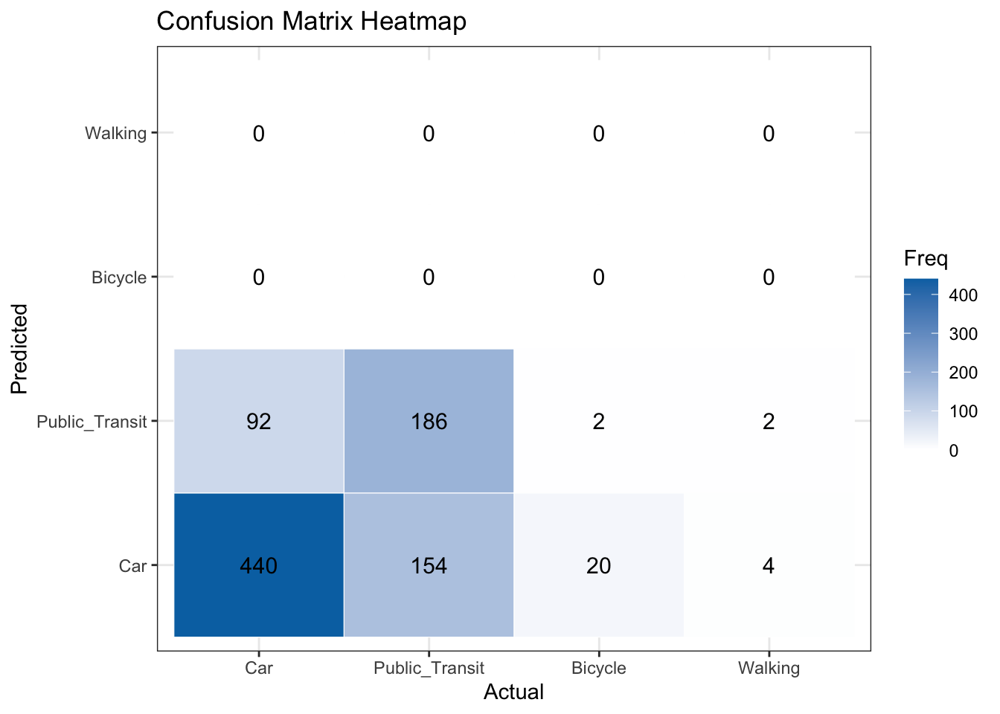
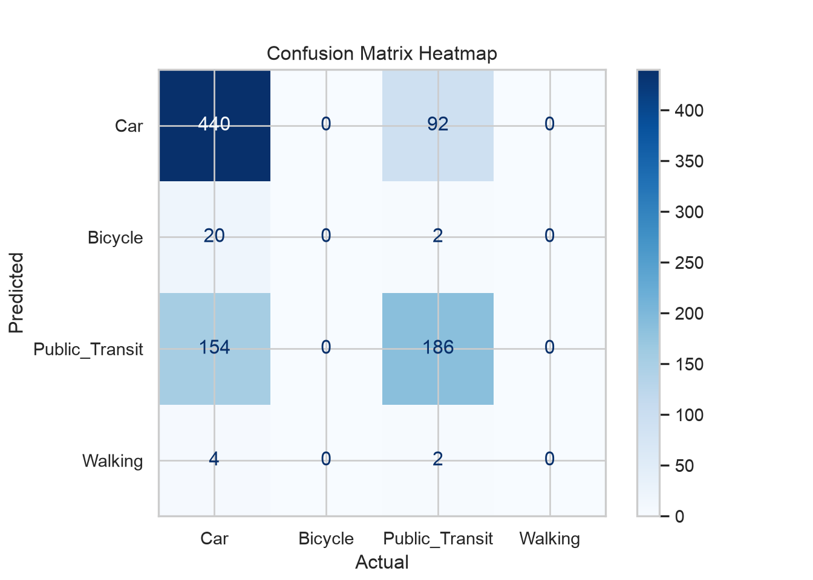
You’re encouraged to repeat these diagnostics on the balanced (upsampled) model and on the held‑out test set to compare whether balancing improves minority class recall without overly harming overall calibration.
Let’s compute the metrics.
# Classification predictions & confusion matrix
y_pred <- predict(multinom_fit, newdata = train_set)
conf_matrix <- confusionMatrix(factor(y_pred, levels = levels(train_set$transport_mode)),
factor(train_set$transport_mode, levels = levels(train_set$transport_mode)))
overall_accuracy <- conf_matrix$overall['Accuracy']
macro_recall <- mean(conf_matrix$byClass[,"Recall"], na.rm = TRUE)
macro_f1 <- mean(conf_matrix$byClass[,"F1"], na.rm = TRUE)
cat("Overall Accuracy:", round(overall_accuracy, 3), "\n")
cat("Macro Recall:", round(macro_recall, 3), "\n")
cat("Macro F1:", round(macro_f1, 3), "\n")# Compute classification predictions & confusion matrix
probs = multinom_fit.predict(X_numeric) # DataFrame of class probabilities
y_pred = probs.idxmax(axis=1)
# Compute the metrics
acc = accuracy_score(y.cat.codes, y_pred)
recall = recall_score(y.cat.codes, y_pred, average='macro')
f1 = f1_score(y.cat.codes, y_pred, average='macro')
print(f"Overall Accuracy: {acc:.3f}")
print(f"Macro Recall: {recall:.3f}")
print(f"Macro F1-score: {f1:.3f}")Overall Accuracy: 0.696 Macro Recall: 0.344 Macro F1: 0.682 About 69.6% of all individual transportation modes were classified correctly. On average, the model correctly identifies 34.4% of instances for each transport mode. Recall is relatively low, which suggests the model is biased to the majority classes, even though accuracy is decent. Macro F1 score is 0.682, meaning the model has a moderate balance of precision and recall on average per class. Macro F1 is much higher than macro recall — this can happen if precision is high for the majority class, but recall for minority classes is low. In summary, the model performs okay overall but is biased toward the dominant class(es). It often fails to detect less frequent transport modes, which is why macro recall is low. Accuracy alone would overestimate the model’s effectiveness across all classes. You are encouraged to explore the performance of the fitted model on the balanced sets.
14.8 Inference
After we finish estimating the coefficients, we look at how uncertain they are and whether they differ from zero. We get a variance estimate for each coefficient from the observed information matrix (the negative of the Hessian at the solution). Taking square roots of those variances gives standard errors. Similar as in Poisson regression, each coefficient divided by its standard error gives a (asymptotically normal) Wald Z statistic to test if the true effect is zero. Using the same standard errors we build confidence intervals: estimate \(\pm\) (critical value \(\times\) standard error). To make results easier to interpret, we often exponentiate a coefficient (or its confidence limits) to get an odds ratio—how the odds of choosing a category change for a one‑unit increase in the predictor, holding other variables fixed.
We can determine whether a regressor is statistically associated with the logarithm of the odds through hypothesis testing for the parameters \(\beta^{(u,v)}_j\) by link function. Define the Wald statistic \(z^{(u,v)}_j\) as: \[ z_j^{(u, v)} = \frac{\hat{\beta}_j^{(u, v)}}{\mbox{se}\left(\hat{\beta}_j^{(u, v)}\right)} \] and we test the hypotheses: \[ \begin{gather*} H_0: \beta_j^{(u, v)} = 0\\ H_a: \beta_j^{(u, v)} \neq 0. \end{gather*} \] Provided the sample size \(n\) is large enough, \(z_j\) has an approximately Standard Normal distribution under \(H_0\).
The corresponding \(p\)-values for each \(\beta^{(u,v)}_j\) can be computed. The smaller the \(p\)-value, the stronger the evidence against the null hypothesis \(H_0\). As in the previous regression models, we would set a predetermined significance level (usually taken to be 0.05) to infer if the \(p\)-value is small enough. If the \(p\)-value is smaller than the predetermined level \(\alpha\), then you could claim that there is evidence to reject the null hypothesis. Hence, \(p\)-values that are small enough indicate that the data provides evidence in favour of association (or causation in the case of an experimental study!) between the response variable and the \(j\)th regressor.
Given a specified level of confidence where \(\alpha\) is the significance level, we can construct approximate \((1-\alpha)\times 100\%\) confidence intervals for the corresponding true value of \(\beta^{(u,v)}_j\): \[ \begin{equation*} \hat{\beta}_j^{(u, v)} \pm z_{\alpha/2}\mbox{se} \left( \hat{\beta}_j^{(u, v)} \right), \end{equation*} \] where \(z_{\alpha/2}\) is the upper \(\alpha/2\) quantile of the Standard Normal distribution.
We compute the 95% confidence intervals below and filter the signicant coefficients under the 5% significance level.
data_dict = {
"estimate": np.exp(multinom_fit.params), # odds ratios
"pvalue": multinom_fit.pvalues,
"std_err": multinom_fit.bse,
"statistic": multinom_fit.tvalues
}
# Outcome class mapping
class_map = {0: "Bicycle", 1: "Public_Transit", 2: "Walking"}
# Container for processed tidy tables
tidy_dict = {}
for name, df in data_dict.items():
tidy = (
df.stack() # long form
.swaplevel() # variable first, outcome second
.reset_index() # convert MultiIndex to columns
.rename(columns={"level_0": "outcome_class",
"level_1": "variable",
0: name})
)
tidy["outcome_class"] = tidy["outcome_class"].replace(class_map)
tidy = tidy.sort_values(by="outcome_class").reset_index(drop=True)
tidy_dict[name] = tidy
# CIs
conf = multinom_fit.conf_int()
or_conf = np.exp(conf)
ci_lower_stacked = or_conf["lower"].reset_index()
ci_lower_stacked.columns = ['outcome_class', 'term', 'ci_lower']
ci_upper_stacked = or_conf["upper"].reset_index()
ci_upper_stacked.columns = ['outcome_class', 'term', 'ci_upper']
# Merge the result tables
ref_cols = ["outcome_class", "term"]
results = tidy_dict['estimate'] \
.merge(tidy_dict['pvalue'], on=ref_cols) \
.merge(tidy_dict['std_err'], on=ref_cols) \
.merge(tidy_dict['statistic'], on=ref_cols) \
.merge(ci_lower_stacked, on=ref_cols) \
.merge(ci_upper_stacked, on=ref_cols)
# Filter the rows with significant p-values
results_sig = results[results["pvalue"] < 0.05].round(3)
print(results_sig)# A tibble: 7 × 8
outcome_class term estimate std.error statistic p.value conf.low conf.high
<chr> <chr> <dbl> <dbl> <dbl> <dbl> <dbl> <dbl>
1 Public_Transit (Inter… 0.386 0.303 -3.14 0.002 0.213 0.699
2 Public_Transit commut… 1.12 0.012 9.68 0 1.10 1.15
3 Public_Transit has_ca… 0.211 0.169 -9.21 0 0.151 0.293
4 Bicycle (Inter… 0.033 0.962 -3.54 0 0.005 0.218
5 Bicycle commut… 0.881 0.043 -2.94 0.003 0.809 0.959
6 Walking (Inter… 0.009 1.77 -2.68 0.007 0 0.278
7 Walking has_ca… 0.091 0.91 -2.63 0.009 0.015 0.544Whether people choose driving or taking public transits varys significantly on average. The commute distance and the availability of cars both have significant effects on the choices of transportation mode.
14.9 Results
The predicted model can be written as \[ \log \big[ \frac{\Pr(Y_i = k)}{\Pr(Y_i = \text{Car})} \big] = \hat{\beta}_{0k} + \hat{\beta}_{1k} X_{1i} + \hat{\beta}_{2k} X_{2i} + \hat{\beta}_{3k} X_{3i} + \hat{\beta}_{4k} X_{4i}, \] where \(k\in\{\) Bicycle, Public Transit, Walking \(\}\) and \(X_1,X_2,X_3,X_4\) represent age, commute distance, car availability, and weekend commuter indicator respectively.
14.9.1 Prediction
We predict the model on test set and visualize the prediction results in the confusion matrix below.
# Predict on the test set using the fitted model
y_pred <- predict(multinom_fit, newdata = test_set)
# Compute confusion matrix
conf_matrix <- confusionMatrix(factor(y_pred, levels = levels(test_set$transport_mode)),
factor(test_set$transport_mode, levels = levels(test_set$transport_mode)))
# Visualize the confusion matrix
cm_table <- as.table(conf_matrix$table)
cm_df <- as.data.frame(cm_table)
colnames(cm_df) <- c("Predicted", "Actual", "Freq")
cm_df %>%
ggplot(aes(x = Predicted, y = Actual, fill = Freq)) +
geom_tile(color = "white") +
geom_text(aes(label = Freq), color = "black", size = 4) +
scale_fill_gradient(low = "#f7fbff", high = "#2171b5") +
labs(title = "Confusion Matrix (Test Set)", x = "Predicted", y = "Actual") +
theme_bw()# Predict on the test set using the fitted model
test_set["transport_mode"] = pd.Categorical(
test_set["transport_mode"], # align with earlier label spelling
categories=["Car", "Bicycle", "Public Transit", "Walking"],
ordered=False
)
y_test = test_set["transport_mode"]
X_test = test_set[["age", "commute_distance", "has_car_available", "weekend_commuter"]]
X_test = sm.add_constant(X_test)
X_test_num = X_test.copy()
for col in ['has_car_available', 'weekend_commuter']:
X_test_num[col] = X_test_num[col].cat.codes
y_pred_test = multinom_fit.predict(X_test_num).idxmax(axis=1)
# Compute the confusion matrix
cm = confusion_matrix(y_test.cat.codes, y_pred_test)
# Print confusion matrix
labels = y_test.cat.categories
cm = confusion_matrix(y_test.cat.codes, y_pred_test, labels=range(len(labels)))
disp = ConfusionMatrixDisplay(confusion_matrix=cm, display_labels=y_test.cat.categories)
disp.plot(cmap='Blues')
plt.title("Confusion Matrix")
plt.xlabel("Actual")
plt.ylabel("Predicted")
plt.show()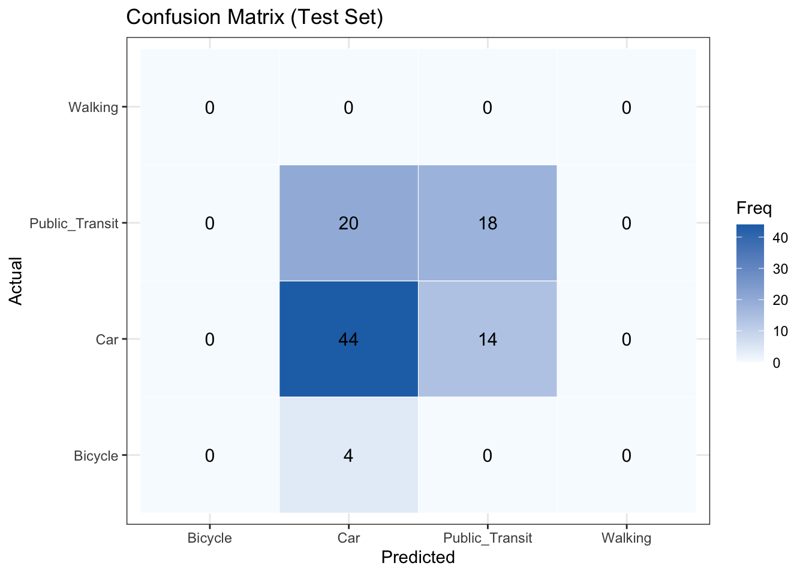
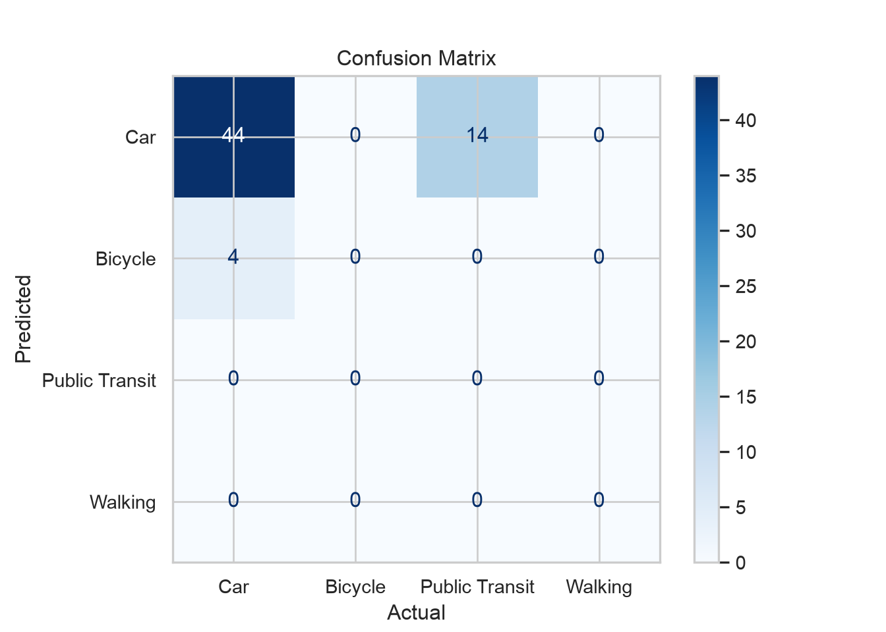
The corresponding metrics are computed below.
# Compute the metrics
overall_accuracy <- conf_matrix$overall['Accuracy']
macro_recall <- mean(conf_matrix$byClass[,"Recall"], na.rm = TRUE)
macro_f1 <- mean(conf_matrix$byClass[,"F1"], na.rm = TRUE)
cat("Overall Accuracy:", round(overall_accuracy, 3), "\n")
cat("Macro Recall:", round(macro_recall, 3), "\n")
cat("Macro F1:", round(macro_f1, 3), "\n")# Compute the metrics
acc = accuracy_score(y_test.cat.codes, y_pred_test)
recall = recall_score(y_test.cat.codes, y_pred_test, average='macro')
f1 = f1_score(y_test.cat.codes, y_pred_test, average='macro')
print(f"Overall Accuracy: {acc:.3f}")
print(f"Macro Recall: {recall:.3f}")
print(f"Macro F1-score: {f1:.3f}")Overall Accuracy: 0.62 Macro Recall: 0.411 Macro F1: 0.606 On the test set, the model’s overall accuracy is slightly lower than training. The higher macro recall suggests the model is now better at detecting less frequent transport modes, though overall prediction quality per class (macro F1) is still moderate. This indicates the model generalizes reasonably well, but there is room to improve detection of all classes evenly.
14.10 Storytelling
Commuting behaviors and demographic factors are both associated with transportation mode choice and useful for predicting the choice between choosing cars or public transportation. In general, prediction is stronger for more frequent modes. This inferential question provides a comprehensive understanding of how individual characteristics shape transportation decisions and the predictive question can guide planning or personalized recommendations. You may choose one perspective of either inferential or predictive depending on your research goal.
14.11 Practice Problems
In this final section, you can test your understanding with the following conceptual interactive exercises, and then proceed to work through an inferential analysis of a simple dataset.
14.11.1 Conceptual Questions
Question 14.1
Multiple Choice
Which response variable would be most appropriate for a Multinomial Logistic regression model? Select the correct option:
A. The number of doctor visits a patient has in one year.
B. A student’s exam score out of 100.
C. A person’s primary transport mode, with categories Car, Bicycle, Public_Transit, and Walking.
D. Whether a person owns a car, coded as Yes or No.
Answer 14.1
Click here to reveal the answer!
Correct answer: C.
Rationale:
Multinomial Logistic regression is used for a nominal categorical response with more than two mutually exclusive categories. A count response would motivate a count regression model, a continuous score would motivate a continuous-outcome model, and a binary response would motivate binary logistic regression.
Question 14.2
Multiple Choice
Why is Multinomial Logistic regression more appropriate than Ordinal Logistic regression for the transportation example in this chapter? Select the correct option:
A. transport_mode has categories that are naturally ordered from low to high.
B. transport_mode has unordered categories, so there is no single ranking such as Car \(<\) Bicycle \(<\) Public_Transit \(<\) Walking.
C. transport_mode is a continuous variable.
D. Ordinal Logistic regression can only be used with binary outcomes.
Answer 14.2
Click here to reveal the answer!
Correct answer: B.
Rationale:
The categories in transport_mode are nominal, not ordinal. Multinomial Logistic regression is designed for unordered response categories, whereas Ordinal Logistic regression is used when the response levels have a meaningful order.
Question 14.3
Open-ended Question
In two to four sentences, explain why an ordinary linear regression model would not be appropriate for predicting transport_mode from commute_distance, age, has_car_available, and weekend_commuter.
Answer 14.3
Click here to reveal the answer!
Answer:
A correct answer would note that transport_mode is not continuous, so a linear model’s fitted values would not naturally represent valid category probabilities. Ordinary linear regression can also produce predictions outside the probability scale and does not enforce that the predicted probabilities across transport modes sum to 1. Multinomial Logistic regression handles this by modelling category probabilities through baseline-category logits and the Softmax form.
Question 14.4
Short Answer
If a Multinomial Logistic regression model has \(m\) response categories and one category is chosen as the baseline, how many logit link functions must be estimated? In the chapter’s transportation example with four categories and Car as the baseline, how many link functions are there?
Answer 14.4
Click here to reveal the answer!
Rationale:
The model estimates \(m - 1\) logit link functions, one for each non-baseline category compared to the baseline. With four transport categories and Car as the baseline, there are three link functions: Public_Transit versus Car, Bicycle versus Car, and Walking versus Car.
Question 14.5
Multiple Choice
In the chapter’s notation, what does
\[ \eta_i^{(\texttt{Public},\texttt{Car})} = \log\left[ \frac{P(Y_i = \texttt{Public} \mid \mathbf{x}_i)} {P(Y_i = \texttt{Car} \mid \mathbf{x}_i)} \right] \]
represent? Select the correct option:
A. The probability that individual \(i\) chooses public transit.
B. The log odds of choosing Public_Transit relative to choosing Car, conditional on the predictors.
C. The difference between the probability of choosing Public_Transit and the probability of choosing Car.
D. The residual for individual \(i\).
Answer 14.5
Click here to reveal the answer!
Correct answer: B.
Rationale:
Each linear predictor in Multinomial Logistic regression is a log odds comparison between one non-baseline category and the baseline category. It is not itself a probability, a probability difference, or a residual.
Question 14.6
Short Answer
Why does the chapter use the Softmax form to convert the logit-linear functions into category probabilities? In practice, what problem would occur if we tried to interpret the separate logit-linear scores as probabilities without this final conversion?
Answer 14.6
Click here to reveal the answer!
Rationale:
The Softmax form converts the \(m - 1\) baseline-category logits into probabilities for all \(m\) categories. In practical terms, the model first produces one relative score for each non-baseline category; Softmax then turns those scores into a complete probability distribution. This matters because a person cannot have separate category probabilities that add up to more than 1 or less than 1 across mutually exclusive choices such as Car, Bicycle, Public_Transit, and Walking. Softmax guarantees that each probability is between 0 and 1 and that the probabilities across all categories sum to 1 for each observation. This is also why Softmax appears in many multi-class machine learning models, including the output layer of some neural networks.
Question 14.7
Short Answer
The chapter notes that changing the baseline category, for example from Car to Public_Transit, does not change the estimated probability for each category. If the probabilities do not change, how does changing the baseline affect the coefficients and their interpretation?
Answer 14.7
Click here to reveal the answer!
Rationale:
Changing the baseline changes the parameterization of the model: the intercepts, coefficients, and log-odds comparisons are rewritten relative to a different reference category. If Car is the baseline, a coefficient describes a change in the log odds of some other category versus Car. If Public_Transit becomes the baseline, the same model is now described through comparisons versus Public_Transit. The fitted category probabilities remain the same, but the wording and numerical values of the coefficients change because the reference comparison has changed.
Question 14.8
Short Answer
Suppose the coefficient of commute_distance in the Public_Transit versus Car link function is positive. Interpret this coefficient in words, using the phrase “holding other variables fixed”.
Answer 14.8
Click here to reveal the answer!
Answer:
A positive coefficient means that longer commute distance is associated with higher log odds of choosing Public_Transit rather than Car, holding other variables fixed. Equivalently, for a one-unit increase in commute distance, the odds of Public_Transit relative to Car increase by a multiplicative factor of \(\exp(\hat{\beta})\).
Question 14.9
Multiple Choice
In Multinomial Logistic regression, why do we often exponentiate a coefficient \(\hat{\beta}\)? Select the correct option:
A. To turn a log-odds coefficient into an odds ratio.
B. To turn a category probability into a residual.
C. To make the response variable continuous.
D. To remove the need for a baseline category.
Answer 14.9
Click here to reveal the answer!
Correct answer: A.
Rationale:
The raw coefficient is on the log-odds scale. Exponentiating it gives an odds ratio, which describes the multiplicative change in the odds of a non-baseline category relative to the baseline for a one-unit increase in the predictor, holding other variables fixed.
Question 14.10
Short Answer
In the transportation model, both Bicycle and Walking are compared to the baseline category Car. How could you compare Walking directly to Bicycle using the fitted model?
Answer 14.10
Click here to reveal the answer!
Rationale:
You can subtract the two baseline-category logit equations. If Car is the baseline, then
\[ \log\left[ \frac{P(Y_i = \texttt{Walking} \mid \mathbf{x}_i)} {P(Y_i = \texttt{Car} \mid \mathbf{x}_i)} \right] = \eta_i^{(\texttt{Walking}, \texttt{Car})} \]
and
\[ \log\left[ \frac{P(Y_i = \texttt{Bicycle} \mid \mathbf{x}_i)} {P(Y_i = \texttt{Car} \mid \mathbf{x}_i)} \right] = \eta_i^{(\texttt{Bicycle}, \texttt{Car})}. \]
Therefore,
\[ \log\left[ \frac{P(Y_i = \texttt{Walking} \mid \mathbf{x}_i)} {P(Y_i = \texttt{Bicycle} \mid \mathbf{x}_i)} \right] = \eta_i^{(\texttt{Walking}, \texttt{Car})} - \eta_i^{(\texttt{Bicycle}, \texttt{Car})}. \]
This also means subtracting the corresponding coefficient vectors.
Question 14.11
Multiple Choice
Which statement best describes the independence assumption in the chapter’s transportation example? Select the correct option:
A. Every person must have exactly the same predicted probability for each transport mode.
B. Each observation should represent an independently sampled individual’s transport choice, with response categories that are mutually exclusive and exhaustive.
C. The predictors must be independent of the response variable.
D. The model must have independent coefficients for every category and every predictor.
Answer 14.11
Click here to reveal the answer!
Correct answer: B.
Rationale:
The independence assumption concerns the sampled observations and the structure of the response categories. Each person should contribute one independent observation, and each response should fall into exactly one of the available categories.
Question 14.12
Short Answer
Why do we factorize variables such as transport_mode, has_car_available, and weekend_commuter before fitting the model in R or Python?
Answer 14.12
Click here to reveal the answer!
Rationale:
Factorizing these variables tells the software to treat them as categorical rather than continuous numeric variables. This is especially important for transport_mode, which defines the response categories, and for binary predictors such as has_car_available and weekend_commuter, which should be represented through category indicators or codes rather than interpreted as arbitrary continuous measurements. In coding terms, factors in R determine the available levels and the reference category used in the model matrix. In Python, converting to categorical variables or creating dummy variables with pd.get_dummies() serves the same purpose: it makes the category labels explicit and controls which indicator columns are included in the model. Without this step, software may treat categories as raw numbers or may choose an unintended baseline.
Question 14.13
Multiple Choice
How are the coefficients in a Multinomial Logistic regression model estimated in this chapter? Select the correct option:
A. By minimizing the sum of squared residuals, exactly as in OLS.
B. By maximum likelihood estimation, using an iterative procedure such as Newton-Raphson or IRLS.
C. By choosing the coefficients that make every predicted class correct.
D. By computing the sample mean of each predictor within each class.
Answer 14.13
Click here to reveal the answer!
Correct answer: B.
Rationale:
Multinomial Logistic regression uses maximum likelihood estimation. Since the likelihood equations do not usually have a simple closed-form solution, the chapter describes iterative estimation through Newton-Raphson or IRLS.
Question 14.14
Short Answer
The chapter discusses imbalanced outcome classes. Why can high overall accuracy be misleading when some transport modes are much less frequent than others?
Answer 14.14
Click here to reveal the answer!
Rationale:
If one or two classes dominate the dataset, a model can achieve decent overall accuracy by mostly predicting the majority classes. This can hide poor performance for minority classes, which is why the chapter also examines per-class metrics such as recall and macro F1.
Question 14.15
Short Answer
What is the difference between downsampling and upsampling as strategies for dealing with imbalanced response categories?
Answer 14.15
Click here to reveal the answer!
Rationale:
Downsampling reduces the number of observations in the majority class so the classes are more balanced, but it can throw away useful data. Upsampling increases the number of minority-class observations, often by resampling with replacement, but it can increase the risk of overfitting to repeated minority cases. In practice, this choice depends on the goal of the analysis. If a transit planner mostly cares about overall accuracy, keeping the observed class distribution may be reasonable. If the planner also needs to identify less common choices such as walking or bicycling, balancing methods may help the model pay more attention to those smaller groups, even if overall accuracy decreases.
Question 14.16
Short Answer
In the chapter’s training-set evaluation, accuracy is around 69.6% but macro recall is much lower. What does this pattern suggest about the model’s classification performance?
Answer 14.16
Click here to reveal the answer!
Rationale:
This suggests the model performs reasonably well overall but does not identify all classes equally well. In particular, the lower macro recall indicates weak detection of less frequent transport modes, so accuracy alone overstates how useful the classifier is across all categories.
Question 14.17
Multiple Choice
For inference, the chapter uses the Wald statistic
\[ z_j^{(u, v)} = \frac{\hat{\beta}_j^{(u, v)}}{\mbox{se}\left(\hat{\beta}_j^{(u, v)}\right)}. \]
What null hypothesis is being tested for a particular coefficient? Select the correct option:
A. \(H_0: \beta_j^{(u, v)} = 0\).
B. \(H_0: p_{i,j} = 1\).
C. \(H_0: \hat{y}_i = y_i\) for every observation.
D. \(H_0: \mbox{accuracy} = 1\).
Answer 14.17
Click here to reveal the answer!
Correct answer: A.
Rationale:
The Wald test asks whether a particular true coefficient is zero in a particular logit comparison. A small p-value provides evidence that the predictor is associated with the log odds for that category comparison, given the model.
Question 14.18
Short Answer
Suppose an exponentiated 95% confidence interval for an odds ratio is \((0.82, 1.24)\) for the Bicycle versus Car comparison, where Car is the baseline category. At the 5% significance level, would this provide strong evidence that the predictor changes the odds of choosing Bicycle rather than Car? Why or why not?
Answer 14.18
Click here to reveal the answer!
Rationale:
No. Because the confidence interval includes 1, the data are compatible with no multiplicative change in the odds for that category comparison at the 5% significance level. In this context, the interval says that the predictor could plausibly decrease the odds of choosing the non-baseline category Bicycle rather than the baseline category Car, increase those odds, or have essentially no effect. This would usually correspond to a p-value greater than 0.05 for the associated coefficient.
Question 14.19
Short Answer
The chapter distinguishes an inferential objective from a predictive objective. Give one example of each in a setting different from the transportation case study.
Answer 14.19
Click here to reveal the answer!
Rationale:
For a university dining study, an inferential objective could be to estimate how weekly_food_budget or has_meal_plan is associated with the odds of choosing Food_Delivery, Packed_Lunch, or Fast_Food relative to Cafeteria. A predictive objective could be to use a student’s budget, schedule, distance from home, meal-plan status, and dietary restriction status to classify their most likely lunch choice, then evaluate the classifier with a confusion matrix, accuracy, macro recall, and macro F1.
14.11.2 Coding Question
Problem 1
In this problem, you will investigate a dataset of surveyed students and their usual lunch choices on campus. Each student was asked about their weekly food budget, the amount of time they usually have between classes, their distance from home, whether they have a campus meal plan, whether they have a dietary restriction, and which lunch option they usually choose. These variables are stored as weekly_food_budget, time_between_classes, distance_from_home, has_meal_plan, dietary_restriction, and lunch_choice, respectively. Below is a full breakdown of the variables:
| Variable Name | Description |
|---|---|
| weekly_food_budget | The student’s approximate weekly food budget in dollars. Float (e.g. 62.50, 118.20, etc.). |
| time_between_classes | The number of minutes the student usually has between classes around lunch time. Float (e.g. 15.5, 84.0, etc.). |
| distance_from_home | The student’s distance from home to campus in kilometers. Float (e.g. 2.4, 18.7, etc.). |
| has_meal_plan | Whether the student has a campus meal plan. Categorical: Yes or No. |
| dietary_restriction | Whether the student has a dietary restriction. Categorical: Yes or No. |
| lunch_choice | The student’s usual lunch choice. Categorical: Cafeteria, Packed_Lunch, Food_Delivery, or Fast_Food. |
A campus dining office wants to understand how student schedules, budgets, and constraints shape lunch choices. They are also interested in whether these variables can be used to predict a student’s most likely lunch option.
To answer this, the questions below will guide you through a Multinomial Logistic regression analysis on this data. Specifically, by the end of these questions, you will be able to answer the following concrete questions: 1. How are weekly_food_budget, has_meal_plan, and dietary_restriction associated with lunch choice? 2. Can we predict whether a student is most likely to choose Cafeteria, Packed_Lunch, Food_Delivery, or Fast_Food? 3. How should we think about prediction quality when one lunch category is much more common than the others?
A. Data Collection and Wrangling
- Read in the data from
problem-1-data.csv, checking for any missing entries. - Convert the categorical variables to factors in
Ror categorical variables inPython. - Drop rows with missing entries, then split the dataset into training and test sets.
- Check the training-set class counts for
lunch_choice. Is the response balanced?
Click to reveal answer
── Attaching core tidyverse packages ──────────────────────── tidyverse 2.0.0 ──
✔ forcats 1.0.1 ✔ purrr 1.1.0
✔ lubridate 1.9.4 ✔ stringr 1.5.2
── Conflicts ────────────────────────────────────────── tidyverse_conflicts() ──
✖ gridExtra::combine() masks dplyr::combine()
✖ magrittr::extract() masks tidyr::extract()
✖ dplyr::filter() masks stats::filter()
✖ dplyr::lag() masks stats::lag()
✖ purrr::lift() masks caret::lift()
✖ purrr::set_names() masks magrittr::set_names()
ℹ Use the conflicted package (<http://conflicted.r-lib.org/>) to force all conflicts to become errorslibrary(nnet)
library(caret)
library(broom)
df <- read_csv("./14-multinomial-logistic_files/simulations/problem-1-data.csv")Rows: 750 Columns: 6
── Column specification ────────────────────────────────────────────────────────
Delimiter: ","
chr (3): has_meal_plan, dietary_restriction, lunch_choice
dbl (3): weekly_food_budget, time_between_classes, distance_from_home
ℹ Use `spec()` to retrieve the full column specification for this data.
ℹ Specify the column types or set `show_col_types = FALSE` to quiet this message. weekly_food_budget time_between_classes distance_from_home
21 13 0
has_meal_plan dietary_restriction lunch_choice
0 0 0 df <- df %>%
drop_na() %>%
mutate(
lunch_choice = factor(lunch_choice,
levels = c("Cafeteria", "Packed_Lunch",
"Food_Delivery", "Fast_Food")),
has_meal_plan = factor(has_meal_plan, levels = c("No", "Yes")),
dietary_restriction = factor(dietary_restriction, levels = c("No", "Yes"))
)
set.seed(1411)
train_id <- sample(seq_len(nrow(df)), size = floor(0.8 * nrow(df)))
train_set <- df[train_id, ]
test_set <- df[-train_id, ]
table(train_set$lunch_choice)
Cafeteria Packed_Lunch Food_Delivery Fast_Food
375 67 80 50 import numpy as np
import pandas as pd
import matplotlib.pyplot as plt
import statsmodels.api as sm
from sklearn.metrics import confusion_matrix, accuracy_score, recall_score, f1_score, log_loss
from sklearn.utils import resample
df = pd.read_csv("./14-multinomial-logistic_files/simulations/problem-1-data.csv")
print(df.isnull().sum())
levels = ["Cafeteria", "Packed_Lunch", "Food_Delivery", "Fast_Food"]
df = df.dropna().copy()
df["lunch_choice"] = pd.Categorical(df["lunch_choice"], categories=levels)
df["has_meal_plan"] = pd.Categorical(df["has_meal_plan"], categories=["No", "Yes"])
df["dietary_restriction"] = pd.Categorical(df["dietary_restriction"], categories=["No", "Yes"])
train_set = df.sample(frac=0.8, random_state=1411)
test_set = df.drop(train_set.index)
print(train_set["lunch_choice"].value_counts())weekly_food_budget and time_between_classes, so dropping incomplete rows is reasonable here. The training set is not balanced: Cafeteria is the most common choice, while Fast_Food, Packed_Lunch, and Food_Delivery are less frequent.
B. Exploratory Data Analysis
- Plot the distribution of
lunch_choice. - Plot
weekly_food_budgetbylunch_choice. Which choices tend to have higher budgets? - Plot lunch choice proportions by
has_meal_plan. - Plot lunch choice proportions across binned values of
time_between_classes. Do the patterns look perfectly linear?
Click to reveal answer
ggplot(train_set, aes(x = lunch_choice, fill = lunch_choice)) +
geom_bar() +
theme_minimal() +
labs(x = "Lunch choice", y = "Count", title = "Distribution of lunch choice")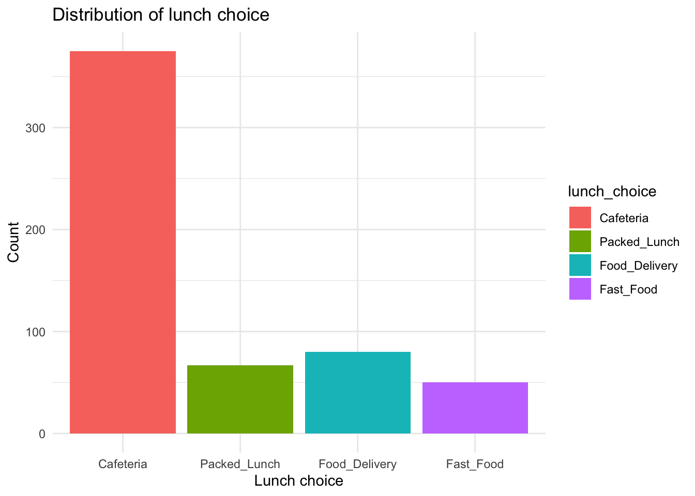
ggplot(train_set, aes(x = lunch_choice, y = weekly_food_budget, fill = lunch_choice)) +
geom_boxplot(alpha = 0.7) +
theme_minimal() +
labs(x = "Lunch choice", y = "Weekly food budget")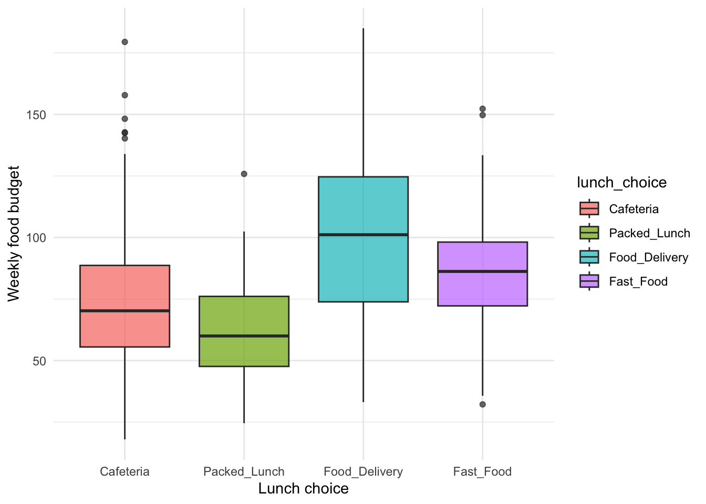
ggplot(train_set, aes(x = has_meal_plan, fill = lunch_choice)) +
geom_bar(position = "fill") +
theme_minimal() +
labs(x = "Has meal plan", y = "Proportion", fill = "Lunch choice")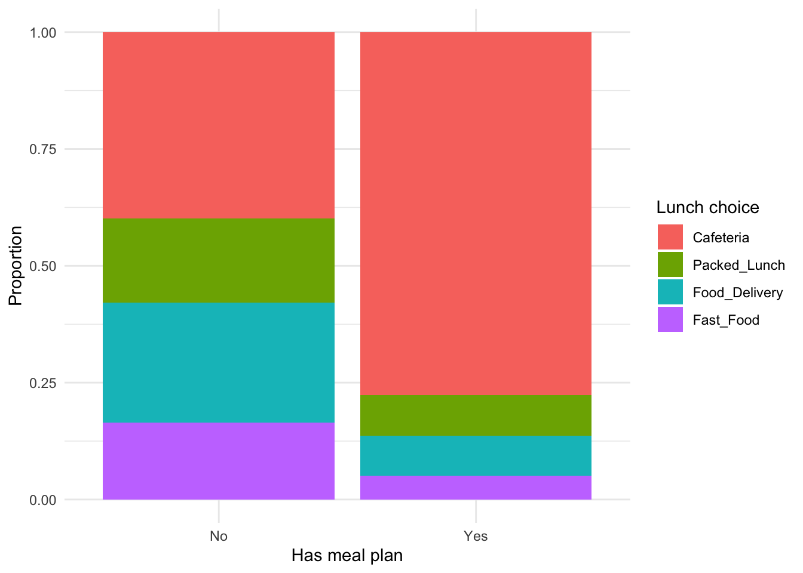
train_set %>%
mutate(time_bin = cut(time_between_classes, breaks = seq(0, 160, by = 20))) %>%
count(time_bin, lunch_choice) %>%
group_by(time_bin) %>%
mutate(prop = n / sum(n)) %>%
ggplot(aes(x = time_bin, y = prop, color = lunch_choice, group = lunch_choice)) +
geom_point() +
geom_line() +
theme_minimal() +
labs(x = "Time between classes", y = "Proportion", color = "Lunch choice")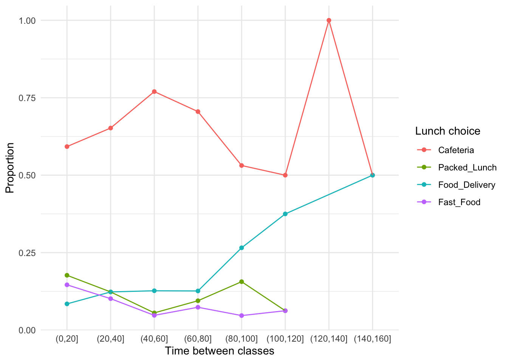
counts = train_set["lunch_choice"].value_counts().reindex(levels)
plt.figure()
plt.bar(counts.index, counts.values)
plt.title("Distribution of lunch choice")
plt.xlabel("Lunch choice")
plt.ylabel("Count")
plt.xticks(rotation=20)
plt.show()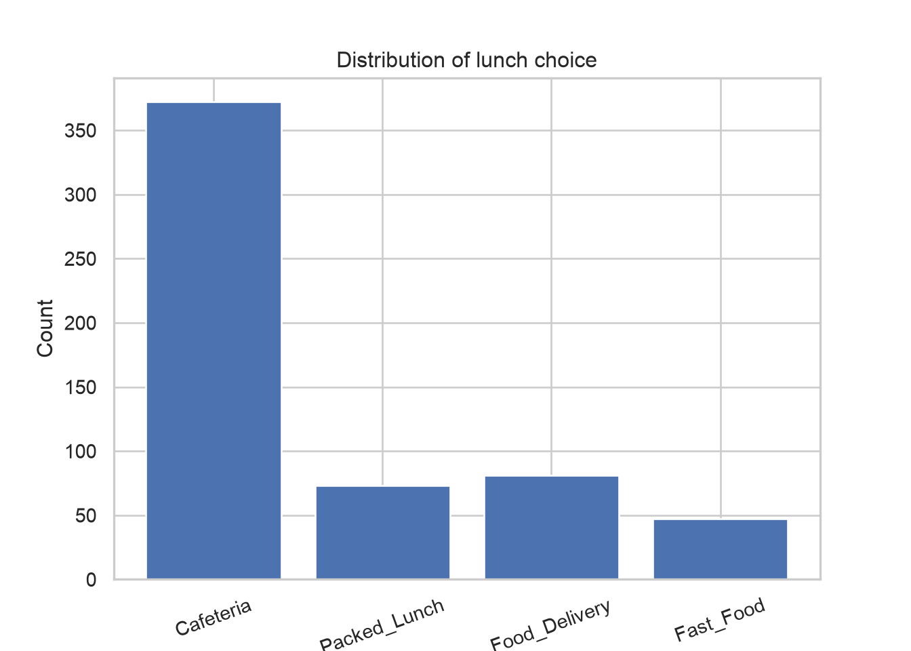
budget_groups = [
train_set.loc[train_set["lunch_choice"] == level, "weekly_food_budget"]
for level in levels
]
plt.figure()
plt.boxplot(budget_groups)
plt.xticks(range(1, len(levels) + 1), levels, rotation=20)
plt.xlabel("Lunch choice")
plt.ylabel("Weekly food budget")
plt.show()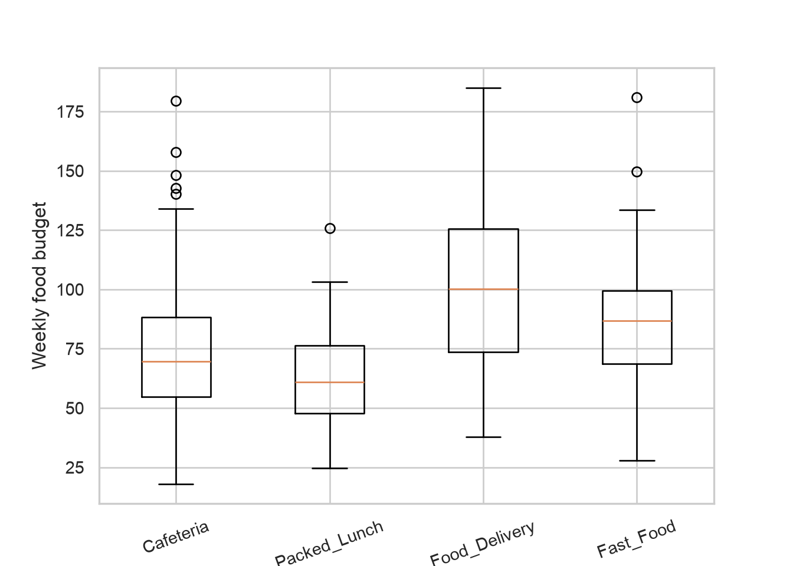
meal_props = pd.crosstab(train_set["has_meal_plan"], train_set["lunch_choice"], normalize="index")
x = np.arange(len(meal_props.index))
bottom = np.zeros(len(meal_props.index))
plt.figure()
for level in levels:
plt.bar(x, meal_props[level], bottom=bottom, label=level)
bottom += meal_props[level].values
plt.xticks(x, meal_props.index)
plt.xlabel("Has meal plan")
plt.ylabel("Proportion")
plt.legend(title="Lunch choice", loc="upper center", bbox_to_anchor=(0.5, 1.18), ncol=2)
plt.tight_layout()
plt.show()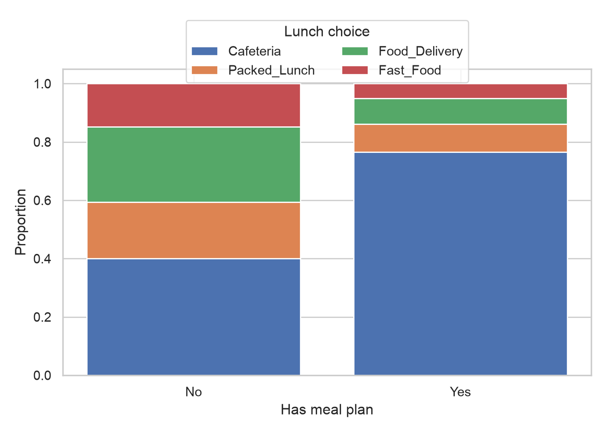
time_bins = pd.cut(train_set["time_between_classes"], bins=np.arange(0, 161, 20))
time_props = pd.crosstab(time_bins, train_set["lunch_choice"], normalize="index")
plt.figure()
for level in levels:
plt.plot(time_props.index.astype(str), time_props[level], marker="o", label=level)
plt.xlabel("Time between classes")
plt.ylabel("Proportion")
plt.xticks(rotation=45)
plt.legend(title="Lunch choice", loc="upper center", bbox_to_anchor=(0.5, 1.18), ncol=2)
plt.tight_layout()
plt.show()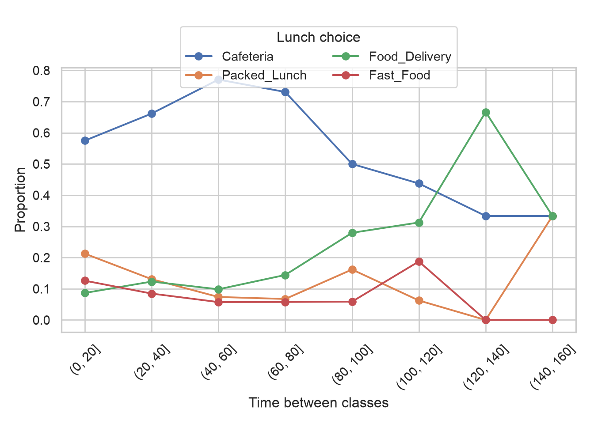
Cafeteria is the most common lunch choice. Students choosing Food_Delivery and Fast_Food tend to have higher food budgets, while Packed_Lunch is more common among students with lower budgets or dietary restrictions. Meal-plan students are much more likely to choose Cafeteria. The relationship with time_between_classes is not perfectly linear, which is common in behavioural data.
C. Data Modelling
- Fit a Multinomial Logistic regression model predicting
lunch_choiceusing all other variables. UseCafeteriaas the baseline class. - Display a summary of the fitted model.
- Exponentiate the coefficients to obtain odds ratios.
- Since the outcome classes are imbalanced, create an upsampled training set and fit a second Multinomial Logistic regression model.
Click to reveal answer
model1 <- multinom(
lunch_choice ~ weekly_food_budget + time_between_classes + distance_from_home +
has_meal_plan + dietary_restriction,
data = train_set,
trace = FALSE
)
summary(model1)Call:
multinom(formula = lunch_choice ~ weekly_food_budget + time_between_classes +
distance_from_home + has_meal_plan + dietary_restriction,
data = train_set, trace = FALSE)
Coefficients:
(Intercept) weekly_food_budget time_between_classes
Packed_Lunch 0.07558974 -0.02240588 -0.006281046
Food_Delivery -4.51577898 0.03136322 0.016932873
Fast_Food -1.96755087 0.01528268 -0.011800682
distance_from_home has_meal_planYes dietary_restrictionYes
Packed_Lunch 0.08174735 -1.254915 0.6592553
Food_Delivery 0.05961312 -1.635005 -0.2347858
Fast_Food 0.02651802 -1.713195 0.3621389
Std. Errors:
(Intercept) weekly_food_budget time_between_classes
Packed_Lunch 0.5933391 0.006527077 0.005239926
Food_Delivery 0.6080691 0.004851295 0.004826418
Fast_Food 0.6441040 0.005693379 0.006135775
distance_from_home has_meal_planYes dietary_restrictionYes
Packed_Lunch 0.01903229 0.2966292 0.3191178
Food_Delivery 0.02040588 0.2887679 0.3781003
Fast_Food 0.02551882 0.3277669 0.3726499
Residual Deviance: 955.1443
AIC: 991.1443 (Intercept) weekly_food_budget time_between_classes
Packed_Lunch 1.07852001 0.9778433 0.9937386
Food_Delivery 0.01093508 1.0318602 1.0170770
Fast_Food 0.13979882 1.0154001 0.9882687
distance_from_home has_meal_planYes dietary_restrictionYes
Packed_Lunch 1.085182 0.2851001 1.9333521
Food_Delivery 1.061426 0.1949514 0.7907402
Fast_Food 1.026873 0.1802888 1.4363985set.seed(1411)
train_balanced <- upSample(
x = train_set[, c("weekly_food_budget", "time_between_classes",
"distance_from_home", "has_meal_plan", "dietary_restriction")],
y = train_set$lunch_choice,
yname = "lunch_choice"
)
train_balanced$lunch_choice <- relevel(train_balanced$lunch_choice, ref = "Cafeteria")
model_balanced <- multinom(
lunch_choice ~ weekly_food_budget + time_between_classes + distance_from_home +
has_meal_plan + dietary_restriction,
data = train_balanced,
trace = FALSE
)
summary(model_balanced)Call:
multinom(formula = lunch_choice ~ weekly_food_budget + time_between_classes +
distance_from_home + has_meal_plan + dietary_restriction,
data = train_balanced, trace = FALSE)
Coefficients:
(Intercept) weekly_food_budget time_between_classes
Packed_Lunch 1.2864866 -0.01731242 -0.004297589
Food_Delivery -2.9416524 0.03368575 0.014622428
Fast_Food -0.1621896 0.01906899 -0.012296635
distance_from_home has_meal_planYes dietary_restrictionYes
Packed_Lunch 0.07896329 -1.110116 0.7694488
Food_Delivery 0.06787018 -1.841287 -0.4730489
Fast_Food 0.02189991 -1.805678 0.3295701
Std. Errors:
(Intercept) weekly_food_budget time_between_classes
Packed_Lunch 0.3339623 0.003330793 0.002698302
Food_Delivery 0.3558866 0.003091267 0.002754942
Fast_Food 0.3275383 0.003016483 0.002814228
distance_from_home has_meal_planYes dietary_restrictionYes
Packed_Lunch 0.01264879 0.1753924 0.1873419
Food_Delivery 0.01355960 0.1833124 0.2195246
Fast_Food 0.01389159 0.1758041 0.1953531
Residual Deviance: 3444.809
AIC: 3480.809 predictors = [
"weekly_food_budget", "time_between_classes", "distance_from_home",
"has_meal_plan", "dietary_restriction"
]
X_train = pd.get_dummies(train_set[predictors], drop_first=True, dtype=float)
X_train = sm.add_constant(X_train, has_constant="add")
y_train = train_set["lunch_choice"].cat.codes
model1 = sm.MNLogit(y_train, X_train).fit(method="newton", maxiter=100, disp=False)
print(model1.summary())
odds_ratios = np.exp(model1.params)
odds_ratios.columns = levels[1:]
print(odds_ratios.round(3))
max_n = train_set["lunch_choice"].value_counts().max()
balanced_parts = []
for level in levels:
subset = train_set[train_set["lunch_choice"] == level]
balanced_parts.append(resample(subset, replace=True, n_samples=max_n, random_state=1411))
train_balanced = pd.concat(balanced_parts)
X_bal = pd.get_dummies(train_balanced[predictors], drop_first=True, dtype=float)
X_bal = sm.add_constant(X_bal, has_constant="add")
y_bal = train_balanced["lunch_choice"].cat.codes
model_balanced = sm.MNLogit(y_bal, X_bal).fit(method="newton", maxiter=100, disp=False)
print(model_balanced.summary())D. Goodness of Fit
- Use the test set to compute predictions from both the original and balanced models.
- Create a confusion matrix for each model.
- Compare accuracy, macro recall, macro F1, and log-loss.
- Which model performs better if the main goal is overall accuracy? Which model performs better if the main goal is recognizing less common lunch choices?
Click to reveal answer
pred1 <- predict(model1, newdata = test_set)
cm1 <- confusionMatrix(
factor(pred1, levels = levels(test_set$lunch_choice)),
factor(test_set$lunch_choice, levels = levels(test_set$lunch_choice))
)
pred_bal <- predict(model_balanced, newdata = test_set)
cm_bal <- confusionMatrix(
factor(pred_bal, levels = levels(test_set$lunch_choice)),
factor(test_set$lunch_choice, levels = levels(test_set$lunch_choice))
)
print(cm1$table) Reference
Prediction Cafeteria Packed_Lunch Food_Delivery Fast_Food
Cafeteria 84 20 14 6
Packed_Lunch 3 3 0 0
Food_Delivery 3 1 7 3
Fast_Food 0 0 0 0print(cm_bal$table) Reference
Prediction Cafeteria Packed_Lunch Food_Delivery Fast_Food
Cafeteria 57 8 5 3
Packed_Lunch 17 11 1 0
Food_Delivery 11 2 11 4
Fast_Food 5 3 4 2probs1 <- predict(model1, newdata = test_set, type = "probs")
probs_bal <- predict(model_balanced, newdata = test_set, type = "probs")
log_loss <- function(probs, actual) {
p <- probs[cbind(seq_along(actual), match(actual, colnames(probs)))]
-mean(log(pmax(p, 1e-15)))
}
metrics <- tibble(
Model = c("Original", "Balanced"),
Accuracy = c(cm1$overall["Accuracy"], cm_bal$overall["Accuracy"]),
Macro_Recall = c(mean(cm1$byClass[, "Recall"], na.rm = TRUE),
mean(cm_bal$byClass[, "Recall"], na.rm = TRUE)),
Macro_F1 = c(mean(cm1$byClass[, "F1"], na.rm = TRUE),
mean(cm_bal$byClass[, "F1"], na.rm = TRUE)),
Log_Loss = c(log_loss(probs1, test_set$lunch_choice),
log_loss(probs_bal, test_set$lunch_choice))
)
print(metrics)# A tibble: 2 × 5
Model Accuracy Macro_Recall Macro_F1 Log_Loss
<chr> <dbl> <dbl> <dbl> <dbl>
1 Original 0.653 0.348 0.462 0.903
2 Balanced 0.562 0.459 0.434 1.16 def prepare_x(data, columns):
x = pd.get_dummies(data[predictors], drop_first=True, dtype=float)
x = sm.add_constant(x, has_constant="add")
return x.reindex(columns=columns, fill_value=0)
def summarize_predictions(probs, actual, model_name):
pred = pd.Categorical([levels[i] for i in probs.idxmax(axis=1)], categories=levels)
cm = pd.DataFrame(confusion_matrix(actual, pred, labels=levels),
index=levels, columns=levels)
metrics = pd.DataFrame({
"Model": [model_name],
"Accuracy": [accuracy_score(actual, pred)],
"Macro_Recall": [recall_score(actual, pred, labels=levels, average="macro", zero_division=0)],
"Macro_F1": [f1_score(actual, pred, labels=levels, average="macro", zero_division=0)],
"Log_Loss": [log_loss(actual, probs.values, labels=levels)]
})
return cm, metrics
X_test1 = prepare_x(test_set, X_train.columns)
probs1 = model1.predict(X_test1)
cm1, metrics1 = summarize_predictions(probs1, test_set["lunch_choice"], "Original")
X_test_bal = prepare_x(test_set, X_bal.columns)
probs_bal = model_balanced.predict(X_test_bal)
cm_bal, metrics_bal = summarize_predictions(probs_bal, test_set["lunch_choice"], "Balanced")
print(cm1)
print(cm_bal)
print(pd.concat([metrics1, metrics_bal]).round(3))E. Inference
- Using the original model, identify statistically significant predictors for each non-baseline category.
- Interpret the odds ratio for
weekly_food_budgetin theFood_DeliveryversusCafeteriacomparison. - Interpret the odds ratio for
has_meal_planYesin one non-baseline comparison. - Explain why these interpretations are associations rather than causal effects.
Click to reveal answer
broom::tidy(model1, conf.int = TRUE, exponentiate = TRUE) %>%
mutate_if(is.numeric, round, 3) %>%
filter(p.value < 0.05) %>%
rename(outcome_class = y.level)# A tibble: 12 × 8
outcome_class term estimate std.error statistic p.value conf.low conf.high
<chr> <chr> <dbl> <dbl> <dbl> <dbl> <dbl> <dbl>
1 Packed_Lunch weekly… 0.978 0.007 -3.43 0.001 0.965 0.99
2 Packed_Lunch distan… 1.08 0.019 4.30 0 1.04 1.13
3 Packed_Lunch has_me… 0.285 0.297 -4.23 0 0.159 0.51
4 Packed_Lunch dietar… 1.93 0.319 2.07 0.039 1.03 3.61
5 Food_Delivery (Inter… 0.011 0.608 -7.43 0 0.003 0.036
6 Food_Delivery weekly… 1.03 0.005 6.46 0 1.02 1.04
7 Food_Delivery time_b… 1.02 0.005 3.51 0 1.01 1.03
8 Food_Delivery distan… 1.06 0.02 2.92 0.003 1.02 1.10
9 Food_Delivery has_me… 0.195 0.289 -5.66 0 0.111 0.343
10 Fast_Food (Inter… 0.14 0.644 -3.06 0.002 0.04 0.494
11 Fast_Food weekly… 1.01 0.006 2.68 0.007 1.00 1.03
12 Fast_Food has_me… 0.18 0.328 -5.23 0 0.095 0.343results = []
for j, level in enumerate(levels[1:]):
results.append(pd.DataFrame({
"outcome_class": level,
"term": model1.params.index,
"odds_ratio": np.exp(model1.params[j]),
"pvalue": model1.pvalues[j]
}))
results = pd.concat(results)
print(results[results["pvalue"] < 0.05].round(3))Food_Delivery versus Cafeteria, the odds ratio for weekly_food_budget is greater than 1. This means that higher weekly food budgets are associated with higher odds of choosing Food_Delivery rather than Cafeteria, holding other variables fixed. For has_meal_planYes, the odds ratios for non-cafeteria choices are below 1, so having a meal plan is associated with lower odds of choosing those options over Cafeteria. These are associations because students were not randomly assigned budgets, meal plans, or dietary restrictions.
F. Prediction and Final Evaluation
- Suppose a student has a weekly food budget of 95 dollars, 25 minutes between classes, lives 6 km from campus, does not have a meal plan, and does not have a dietary restriction. Use both models to predict this student’s lunch-choice probabilities.
- Which lunch choice is most likely under each model?
- Returning to the original campus dining question: what have we learned about understanding and predicting student lunch choice?
- Write a short storytelling summary for a campus dining office. Your summary should explain the main finding, the prediction limitation, and one practical implication in plain language.
Click to reveal answer
new_student <- data.frame(
weekly_food_budget = 95,
time_between_classes = 25,
distance_from_home = 6,
has_meal_plan = factor("No", levels = levels(train_set$has_meal_plan)),
dietary_restriction = factor("No", levels = levels(train_set$dietary_restriction))
)
predict(model1, newdata = new_student, type = "probs") Cafeteria Packed_Lunch Food_Delivery Fast_Food
0.46077757 0.08255004 0.21651130 0.24016109 predict(model_balanced, newdata = new_student, type = "probs") Cafeteria Packed_Lunch Food_Delivery Fast_Food
0.1089723 0.1098637 0.3056283 0.4755357 predict(model1, newdata = new_student)[1] Cafeteria
Levels: Cafeteria Packed_Lunch Food_Delivery Fast_Foodpredict(model_balanced, newdata = new_student)[1] Fast_Food
Levels: Cafeteria Packed_Lunch Food_Delivery Fast_Foodnew_student = pd.DataFrame({
"weekly_food_budget": [95],
"time_between_classes": [25],
"distance_from_home": [6],
"has_meal_plan": ["No"],
"dietary_restriction": ["No"]
})
new_student["has_meal_plan"] = pd.Categorical(new_student["has_meal_plan"], categories=["No", "Yes"])
new_student["dietary_restriction"] = pd.Categorical(new_student["dietary_restriction"], categories=["No", "Yes"])
X_new1 = prepare_x(new_student, X_train.columns)
new_probs1 = model1.predict(X_new1)
new_probs1.columns = levels
X_new_bal = prepare_x(new_student, X_bal.columns)
new_probs_bal = model_balanced.predict(X_new_bal)
new_probs_bal.columns = levels
print(new_probs1.round(3))
print(new_probs_bal.round(3))
print(new_probs1.idxmax(axis=1))
print(new_probs_bal.idxmax(axis=1))The original model may still lean toward Cafeteria, because that is the majority class in the observed data. The balanced model may assign more probability to minority classes such as Fast_Food or Food_Delivery for this profile. Overall, the predictors are useful for understanding lunch-choice patterns, especially the roles of food budget and meal plan status, but prediction is only moderate. Accuracy alone is not enough here, because the model can look good while missing less common lunch choices.